“The Imaginal World is the threshold between the world of pure intellectual intuition and the world of the senses. It is the world where spirits take body and bodies become spiritual.” — Henry Corbin, Alone with the Alone
Struggling Writing investigates writing as a material, performative, and temporal practice that resists transparency. The research asks: What becomes possible when writing no longer functions as a neutral tool but instead becomes unstable, resistant, and materially present? How can typography function as critical inquiry instead of service? What forms of knowledge emerge when legibility is delayed or suspended?
Working at the intersection of typography, visual language, and practice-led research, I treat illegibility, hesitation, and breakdown as productive conditions. Through hand-drawing, analogue tool-making, creative coding, type design, scanning, and typographic system-building, I explore writing as a bodily act shaped by friction and resistance.
The research draws on Adorno’s essay as form, practice-led methodologies (Becoming Research), Situationist détournement, mystical traditions of obscurity, and Henry Corbin’s concept of the imaginal realm as a space where creative imagination becomes world-making. Primary sources include Siyahmashq (dense calligraphic practice), experimental visual poetry (Dotremont, Imagining Language), revelatory texts (Papyrus 24), Suhrawardi’s The Red Intellect, and Federico Campagna’s Prophetic Culture. These sources inform an approach that values accumulation over resolution, duration over immediacy, and opacity as method—bringing these philosophical and mystical traditions into contemporary discourse of art and design research.
The essay is constructed as constellation, assembling texts, visual experiments, and reflections without hierarchy. Written in English with bilingual/biscriptual tensions deliberately unresolved, it enacts the instability it theorizes. The voice shifts between philosophical rigor, lyric intensity, poetic flow and aphoristic compression.
This text articulates the conceptual, theoretical, and methodological framework of an ongoing project. The final work takes two forms in conversation: a printed visual essay and a web-based typographic environment, both using typefaces designed during the research. The work translates written arguments into typographic conditions where meaning redistributes across rhythm and density, and the struggle of writing becomes perceptible as material encounter.
This typographic research essay was created as a work–in–progress project and is structured as a ten-chapter allegorical journey based on Suhrawardi’s The Red Intellect. The chapters are titled: Exile, Encounter, Descent, Recognition, Purification, Travel, Annihilation, Vision, Return, and The Red Intellect. This text addresses the key positions that uphold the philosophical and cosmological themes of the complete work, while focusing specifically on the core concept of Struggling Writing and its theoretical and methodological aspects. Consider this text as a trace—evidence that a more extensive discussion has taken place.
The research happens through making. Writing, drawing, and coding don’t illustrate ideas—they generate them. The writing itself employs a generative and repetitive method that may at times resemble AI-generated text. This is intentional and rooted in historical practice, not AI content generation. The approach draws directly from Siyahmashq tradition and generative typography: knowing the structure and rules of lettering and writing, then making iterations on top of them freely and intuitively to produce dense, accumulated text.
This method of working—repetitive flow as a way to think, design, and write simultaneously—is itself part of the struggling writing experience: unlearning and learning at the same time, letting the framework guide discovery rather than predetermining outcomes. What might read as awkward or repetitive serves the research: these moments perform the friction and material resistance the work investigates.
This research operates across multiple languages and scripts—Farsi, Arabic, and English—and engages with sources in Persian calligraphic tradition, mystical philosophy, and Western critical theory. Translation work throughout the text is my own unless otherwise noted.
Due to the bilingual and biscriptual nature of the research, and the deliberate attention to rhythm, syntax, and linguistic precision required by the essay form, I have used Grammarly as an editorial tool to check grammar, cohesion, and clarity in English-language passages. Grammarly was used for proofreading and editorial review only—not for content generation. All conceptual development, argument construction, theoretical engagement, and voice are entirely my own work.
Where translation from Farsi or Arabic sources has shaped particular formulations, I have prioritized fidelity to the philosophical and aesthetic register of the original while adapting syntax for English readability. This sometimes produces syntactic structures that reflect Persian and Arabic linguistic patterns rather than standard English conventions. These choices are intentional and serve the research’s commitment to working between languages without erasing their difference.
I began noticing writing most clearly when it stopped cooperating. A letter arrived late. A line lost its balance mid-gesture. A system meant to guide the hand produced friction instead of flow. Writing, which is supposed to vanish behind meaning, suddenly became present. Heavy. Demanding. It asked to be dealt with, and in that demand something shifted: the transparent surface revealed itself as material, as labor, as something capable of refusal.
This is where the research begins—in estrangement. Language no longer functions as willing servant. The hand hesitates before the mark. The eye cannot decide where to rest. Writing becomes strange to itself, and in that strangeness, a space opens.
Design education trains smoothness. Correct, align, optimize. Language must clarify; typography must serve that clarification without trace. Legibility becomes an ethical promise. Misunderstanding becomes technical failure. Yet this promise depends on conditions rarely examined: shared habits, learned systems, culturally dominant norms of reading. It assumes meaning should arrive intact, immediately, frictionless. Understanding becomes a right rather than negotiation.
But what if this assumption is itself exile? Exile from the material conditions of writing, from the body that makes marks, from the time it takes for sense to form. To demand that writing disappear is to demand it deny its own existence—to live in permanent estrangement from itself.
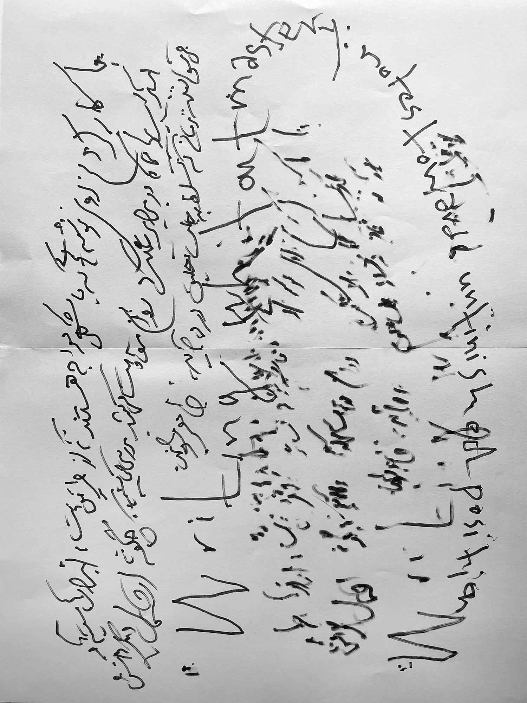
I step away from that assumption.
I work with forms of writing that slow things down, that hesitate, that resist being grasped. Not because they are deliberately obscure, but because they shift where meaning takes place. Sense does not disappear; it relocates. It gathers in rhythm, in density, in the repetition of a mark, in pressure applied to surface. Reading becomes staying with what refuses to resolve. Duration. Inhabitation.
This is exile: to be neither fully inside language nor fully outside it. To work from a position where writing insists on being encountered as material, as time, as something that pushes back. Henry Corbin describes the imaginal realm—the mundus imaginalis—as an intermediate world. A threshold between pure intellection and sensory experience. Neither symbolic abstraction nor material literalism, but a third mode where thought takes perceptible form and form carries thought. Writing in exile operates here. No longer simple vessel for thought, but something that thinks through its own materiality.
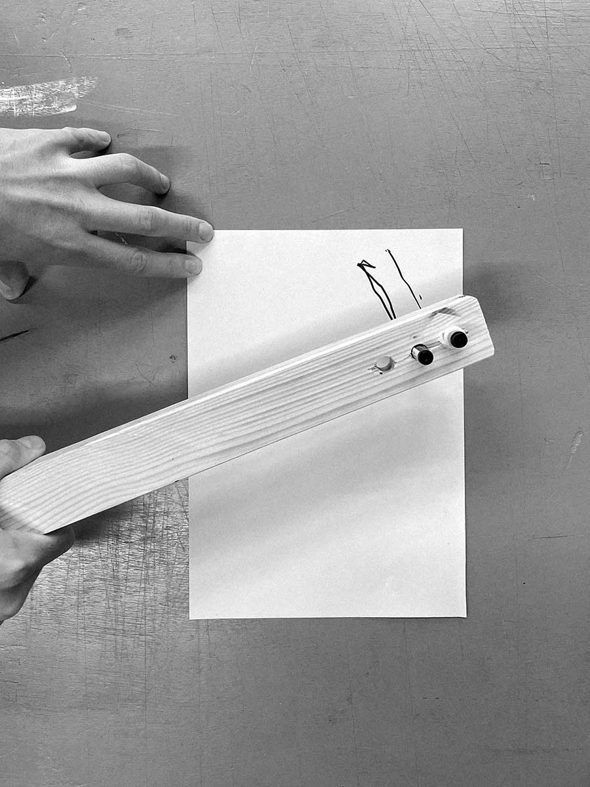
Working this way makes the body impossible to ignore. The hand is no longer neutral executor but active participant, negotiating with tools, surfaces, constraints it did not choose. I draw letters by hand until repetition erodes intention. I build typefaces from marks that tremble under pressure. I write code that generates forms I cannot fully predict. Pressure varies. Lines accumulate. Errors persist. These variations are constitutive—they shape how language is produced.
The tools themselves become sites of estrangement. A pen that catches on fiber. A grid that refuses to contain what it was meant to organize. Scripts—Farsi alongside Latin—that resist translation, that remain opaque even when both are familiar. To work bilingually and biscriptually means inhabiting multiple exiles simultaneously. The scripts do not merge. They coexist in tension, each maintaining its own logic, its own history of exclusion and power.
Systems struggle too. Typography promises order, consistency, reproducibility, control. When its rules are pushed beyond their comfort zone, cracks appear. Structures strain. Modular logic produces excess instead of coherence. What was designed to stabilize meaning begins to expose its own fragility, its own historical contingency.
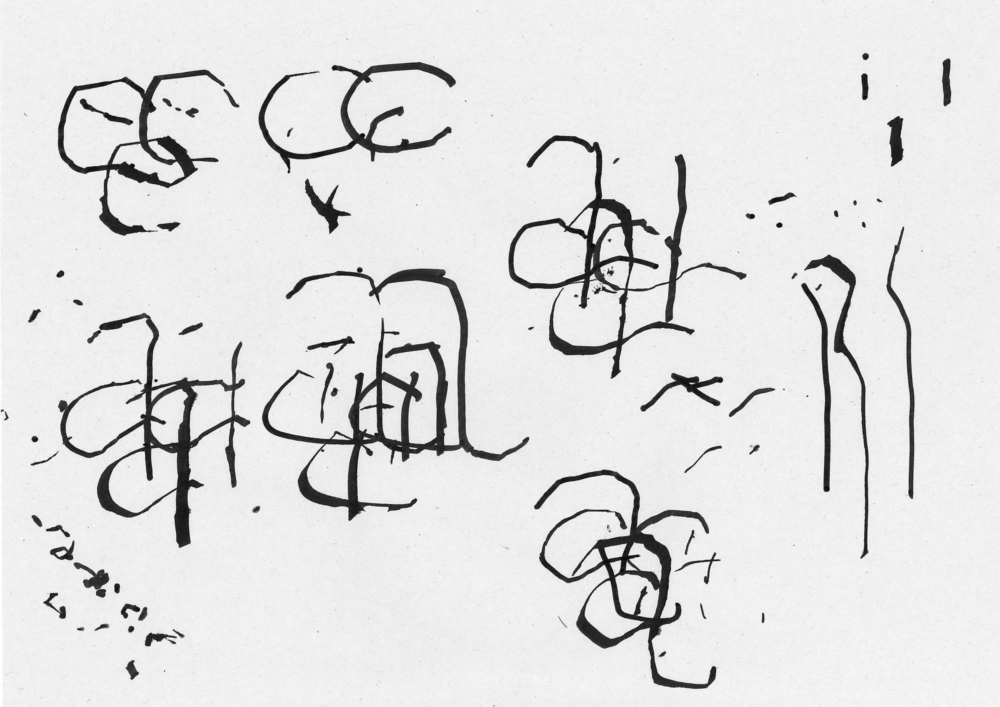
The system stops feeling like neutral infrastructure. It reveals itself as trained behavior: cultural, inherited, enforced. The grid is not natural. The alphabet is not universal. Spacing does not exist outside convention. Every typographic decision carries weight: who was allowed to write, who was rendered illegible, whose language was standardized and whose was suppressed.
To recognize this is to recognize that clarity itself is construct. Not moral good, but political position. Demands for legibility are often demands for compliance. To be readable is to be governable, searchable, classifiable. Opacity has long functioned as survival strategy: in coded languages, in ritual scripts, in forms of writing that refuse capture by dominant systems of interpretation.
I work within this instability through drawing, analogue tool-making, creative coding, type design, scanning, rewriting, building typographic systems that are allowed to fail. Sometimes the results are delicate, almost quiet. Sometimes rough, aggressive, difficult to look at. The shifts between these states reflect the changing balance between control and loss, discipline and fatigue, intention and its gradual collapse.
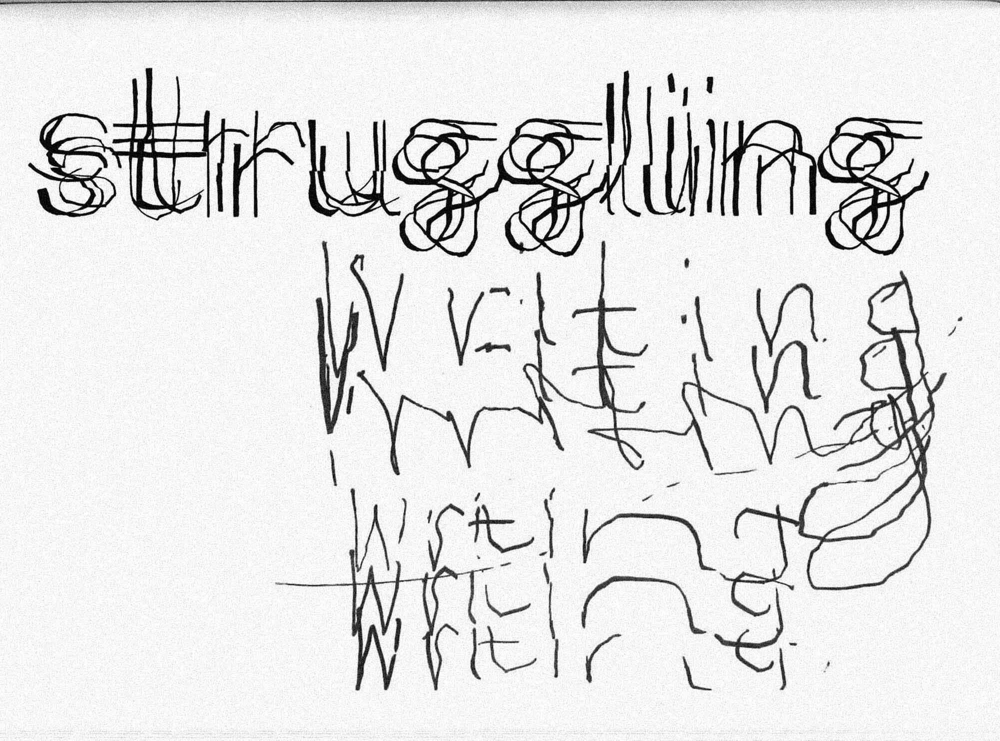
The project becomes speculative. It asks not what writing should do but what it can do when fluency is suspended. What kinds of knowledge surface when clarity is delayed? What becomes visible when form carries more weight than explanation, when the material presence of language refuses to dissolve into transparent communication?
At times the work drifts toward something metaphysical—not as belief or system, but as sensation: presence and absence, rhythm and duration, the awareness that meaning is always more than what can be said. This is not mysticism as escape, but as attention to what resists capture. Language always exceeds its function. Writing carries more than it intends.
Federico Campagna describes this condition in Prophetic Culture as the position of the adolescent—not as an age, but as a stance. The adolescent is neither child nor adult, neither fully inside the world as it is nor capable of leaving it entirely. The adolescent inhabits the threshold, suspended between what was and what might be. This is exile: working from a position that has not yet resolved, that refuses the closure offered by either naive belief or cynical dismissal.
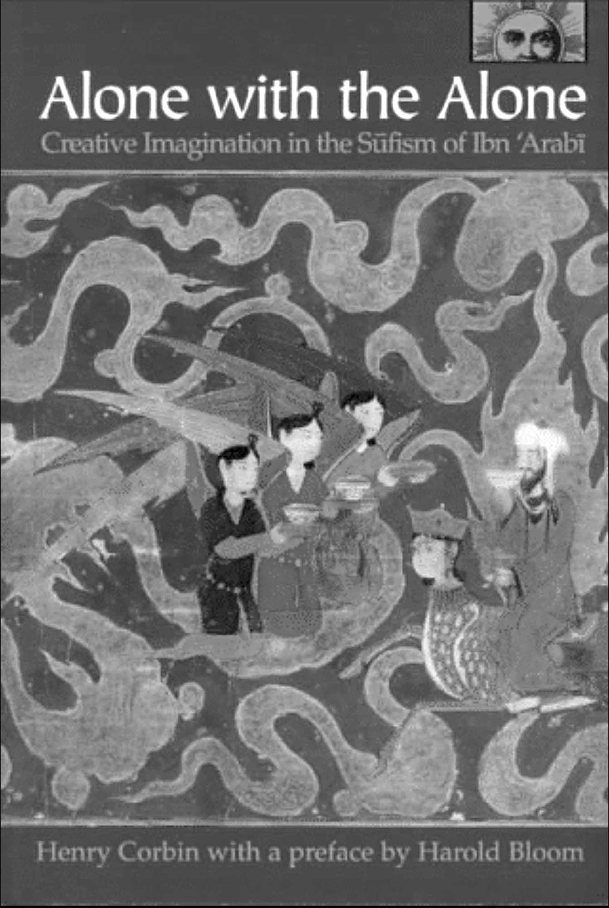
Siyahmashq offers reference here. Not as historical object but as way of thinking through what it means to remain in exile deliberately. In these dense, blackened fields of calligraphic practice, letters return again and again, pressing into the surface until their individual identities blur. The act continues even when meaning no longer resolves, even when reading becomes impossible. What remains: effort, time, endurance. The refusal to stop even after arriving at the limit of legibility.
Writing becomes accumulation. Discipline overwhelms the very surface it was meant to organize. This is exile carried to its extreme: writing that persists where it can no longer function as writing, yet refuses to become anything else. It hovers in the blackness, neither absent nor present, neither resolved nor abandoned.
This logic resonates throughout the project. Writing is treated less as vehicle for transmitting information and more as spatial and temporal practice, where meaning forms gradually and unevenly through proximity, overlap, density. What the work records are not messages but traces: hesitation, insistence, fatigue, the pressure of a hand applied and released.
The research itself follows this logic. It does not move toward single conclusion or unified theoretical system but unfolds through fragments, experiments, written texts, visual materials that sit beside one another without being forced into hierarchy. The archive remains open. Some things clarify; others remain opaque. This is not absence of rigor but refusal of premature closure, recognition that certain questions cannot be answered without betraying their nature.
Design here is not problem-solving but thinking through form. Writing, typography, and visual language become tools for inquiry. What matters is not whether something is fully understood but whether it invites attention—whether it makes visible the conditions under which understanding usually operates unnoticed, whether it creates space for other modes of knowing to emerge.
Exile is not a state to escape but a position to inhabit. It is the ground from which this research speaks—a position of deliberate estrangement from the demand that language serve, clarify, and disappear. To remain in exile is to refuse the fantasy of return to transparent communication, to accept that writing will always carry the trace of its own resistance.
What follows is not a journey toward resolution but movement through conditions of estrangement—each chapter a different threshold, a different way of remaining with what refuses to settle. The work stays in exile because that is where it becomes possible to see writing not as it should be, but as it is: material, temporal, resistant, alive.
Exile is not abstract. It is felt in the hand.
The hand arrives at the page with intention—a letter to write, a form to repeat, a system to follow. The surface pushes back. The pen catches on fiber. Ink spreads unevenly. Pressure leaves traces the hand did not intend. What was supposed to be smooth transfer of thought into mark becomes negotiation. Friction. Encounter.
Practice begins here: in the moment when material refuses to cooperate fully. The hand adjusts. Pressure changes. Rhythm falters, finds a different cadence. Writing becomes dialogue—between what is intended and what emerges, between control and what exceeds it.
Henry Corbin describes the imaginal realm—the mundus imaginalis—as an intermediate world. A threshold between pure intellection and sensory experience. Neither symbolic abstraction nor material literalism, but a third mode where thought takes perceptible form and form carries thought. Writing, when encountered as material, operates in this intermediate space. The mark on the page is neither pure idea nor mere physicality—it is where thinking happens through resistance.
To encounter writing this way means refusing the fantasy that tools disappear. Design education often treats tools as neutral conduits: the pen serves the hand, software serves intention, typography serves language. But tools have their own agency. They shape what becomes possible. A broad nib produces different gestures than a fine point. A modular grid enables certain compositions and forecloses others. Code executes with precision yet surprises with outcomes the programmer did not foresee.
I work with tools that do not pretend neutrality. Custom pens built from awkward materials—wood, wire, rubber band—that force the hand to negotiate. Constrained grids that strain under their own logic. Creative coding environments where algorithms generate forms that feel autonomous, as if the system has begun to think for itself. Type design emerging from marks that tremble, accumulate, refuse to resolve into clean outlines.
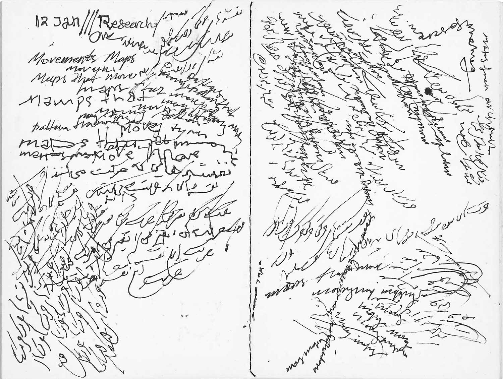
These are tools designed for encounter—for the moment when intention meets resistance and something unexpected appears.
The practice unfolds through repetition. Specific repetition. Not the repetition of mastery, where the gesture becomes more controlled with each iteration. Repetition as a way of eroding certainty. I draw the same letter again and again until the hand forgets what it knows, until the form begins to drift, until what was familiar becomes strange. The first mark is intentional. The tenth is mechanical. The hundredth begins to dissolve into something else—no longer writing, not yet drawing, hovering in indeterminacy.
Siyahmashq becomes relevant here as method. In the dense calligraphic practice of figures like Mirza Gholamreza Esfahani, repetition is entrance into a state where form overwhelms the page. Each stroke is disciplined, controlled. Their accumulation produces saturation. The encounter with the page continues long past the point where legibility dissolves. What emerges is duration—the time of the hand, the insistence of the gesture, the refusal to stop even when meaning has already exceeded its bounds.
My own practice mirrors this. Letters accumulate. Lines overlap. Farsi script and Latin alphabet meet on the same surface, neither translating the other, neither yielding space. The scripts encounter each other as material facts, each carrying its own weight, its own historical momentum. They do not merge into hybrid form. They remain distinct, pressed together in density that cannot be resolved.
Scanning becomes another form of encounter. The same mark, scanned repeatedly at different resolutions, different angles, different lighting conditions, reveals itself differently each time. Texture emerges where the eye saw only line. Edges blur. The digital capture does not reproduce the original—it transforms it. Flattens depth, exaggerates grain, introduces artifacts. Each scan is a new encounter with the same object. Proof that the mark is never fixed, never fully knowable.
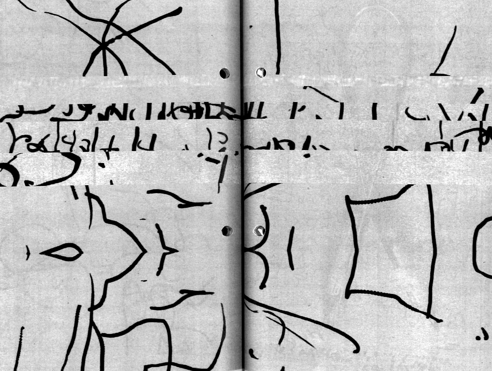
This aligns with phenomenological understanding articulated in practice-led research. In Becoming Research, the argument is clear: making is not separate from thinking but is itself a mode of inquiry. Research is a condition one enters, worked from within the material and cultural situations one investigates. The hand that draws is also the hand that thinks. The eye that scans is also the eye that questions.
Encounter is sustained condition. Ongoing negotiation between what is intended and what appears, between system and deviation, between control and surprise. Typography promises repeatability—the same letter should appear identical each time it is set. In practice, every instance carries variation. Digital fonts anti-alias differently depending on screen resolution. Printed letters absorb ink unevenly depending on paper stock and pressure. Even the most controlled system leaks.
I design typefaces from this leakage. By building variations into the structure of the font itself. Letters that shift slightly with each use. Glyphs that carry traces of the hand even when digitized. A typeface is not a fixed set of shapes but an archive of encounters—between hand and tool, between intention and accident, between one letter and the next.
Creative coding extends this principle into algorithmic space. I write scripts that generate typographic compositions based on parameters I define. The results exceed my predictions. Randomness introduces variation. Iterative processes produce emergent patterns. The code does not illustrate my ideas—it thinks alongside me, sometimes against me, producing forms I would not have imagined but recognize as belonging to the logic of the system.
This is encounter in its most literal sense: coming face to face with something neither fully self nor fully other. The generated form carries my decisions—the parameters, the constraints, the rules—and also exceeds them. It becomes something I must respond to, adjust to, learn from. The maker encounters the work as much as the work encounters the page.
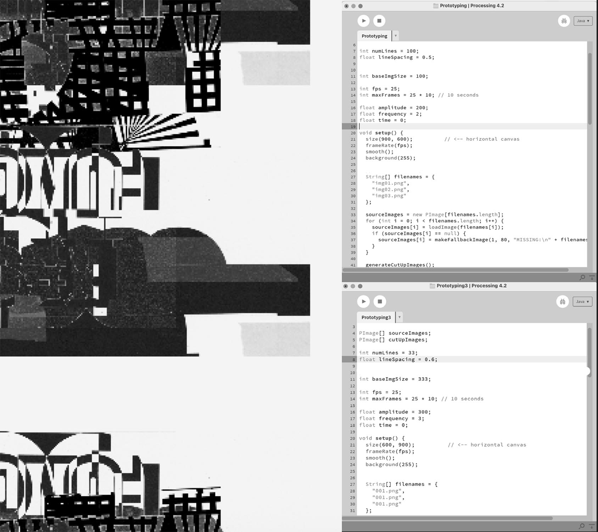
The body cannot be separated from this process. Pressure, fatigue, rhythm—constitutive, not incidental. A line drawn in the morning feels different from a line drawn in the evening. The hand tires. Attention wanders. Intention erodes. These shifts are data to be attended to. They reveal that making is always bodily, always situated in time, always shaped by conditions the maker does not fully control.
There is something erotic in this—not in the sexualized sense, but in the sense of being drawn toward something that resists complete possession. The page pulls the hand forward. The mark demands response. The system insists on being engaged. This is what Corbin means when he speaks of the imaginal as the place where spirits take body and bodies become spiritual—the threshold where encounter becomes transformation, where the material and the mental cease to be separate categories.
To work this way means accepting that resolution is always deferred. The encounter does not produce a final form. It opens onto further encounters. Each mark generates the need for another mark. Each scan reveals textures that demand rescanning. Each iteration of code produces results that suggest new parameters. The work does not conclude—it accumulates, branches, folds back on itself.
This is not an argument for chaos or formlessness. Discipline remains. Rules structure the practice. The discipline is about attentiveness to what emerges when systems are pushed, when repetition becomes excessive, when the hand no longer knows exactly what it is doing but continues anyway.
Encounter, in this sense, is the opposite of mastery. Mastery assumes the maker stands outside the work, directing it from a position of knowledge and control. Encounter assumes the maker is implicated, entangled, changed by the process. The hand that finishes is not the same hand that began. The eye that sees the result has been trained by the act of making to see differently.
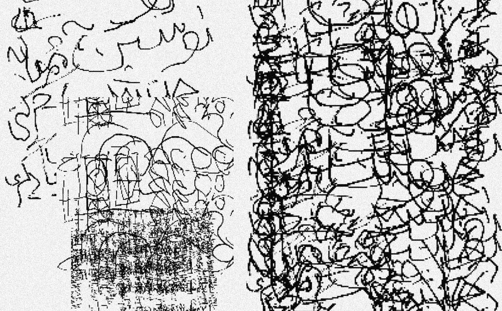
This is where the research becomes practice-led in the fullest sense. Questions do not precede the making—they emerge from it. Each encounter raises new questions: What happens when this form is pushed further? What if the script is reversed? What if the accumulation continues past the point of recognition? The work teaches me what I did not know I was asking.
This is why encounter matters for a project about struggling writing. Writing only struggles when it is encountered—when it is treated as material that pushes back, as a system with its own agency, as a threshold where thought and form meet without fully resolving. To let writing struggle is to let it remain in the condition of encounter, where meaning forms gradually, unevenly, through negotiation.
The hand continues. The marks accumulate. The page grows heavy with attempts. This is not failure—it is attention. Attention to the moment when intention meets resistance and something neither intended nor resisted appears.
That moment is where the work lives.
Siyahmashq does not unfold as writing usually does. It does not progress toward a statement or guide the eye from beginning to end. Instead, it gathers. Letters return again and again, pressing into the surface until their individual identities blur. Meaning does not advance; it thickens. What the page holds is not information, but duration—the time of the hand, the insistence of repetition, the refusal to stop even after legibility has dissolved.
This is descent: deliberate movement into opacity. A choice to continue when clarity has already been exceeded, when the system meant to organize the page has begun to overwhelm it instead. In the calligraphic exercises of figures such as Mirza Gholamreza Esfahani and Mirza Mohammad Hussein Seifi Qazvini, Siyahmashq appears as both discipline and excess. Each stroke follows a learned form, repeated with care and precision. Repetition slowly shifts the function of that form. Control does not disappear, but its outcome changes. Precision accumulates into saturation. Blackness spreads through overwriting, transforming the page into a compact field of marks. The surface grows heavy. It holds time.
Mirza Mohammad Hussein Seifi Qazvini—known as Emad al-Kottab—transformed Siyahmashq from calligraphic exercise into site of personal and political testimony. Working in early twentieth-century Iran under conditions of imprisonment and social upheaval, Emad wrote his Siyahmashq as diary entries, recording physical suffering and political constraint: “My eyes hurt. Teeth fallen out, cannot eat. Friday is bath day—is the hammam warm or cold? Must go regardless.” The text matters. Where traditional Siyahmashq used poetry as neutral vehicle for demonstrating skill, Emad’s texts are urgent, specific, irreducible. The accumulation of marks becomes accumulation of days in confinement, the density of black ink becomes density of lived experience under oppression. His pages refuse decorative margins, using every available surface—what is called faqr-nama’i, poverty aesthetic—making the work accessible, reproducible, addressed to common people rather than elite patrons. This merging of personal voice with political condition, individual hand with collective struggle, prefigures concerns that remain urgent: how writing becomes witness, how opacity protects as much as it reveals, how repetition under constraint generates forms of knowledge unavailable to transparent communication.
To descend is to accept that clarity is not the only form of knowledge. Darkness is not the absence of vision but a different mode of seeing. Accumulation can produce insight even when it forecloses comprehension.
In Suhrawardi’s allegorical narrative The Red Intellect, the seeker does not find truth by avoiding obscurity but by entering it. The journey begins with exile—cast out from the familiar world—but continues through voluntary descent into the darkness of unknowing. In that darkness, vision does not arrive through illumination alone but through passage, through endurance, through the willingness to remain within uncertainty long enough for the eyes to adjust.
Darkness is not the opposite of light; it is its condition. What can be seen in daylight is only what light allows. In darkness, other forms of perception emerge—touch, sound, the memory of space, the awareness of presence without image. Siyahmashq operates within this paradox. The blackness on the page is not negation, but a field in which another kind of seeing becomes possible.
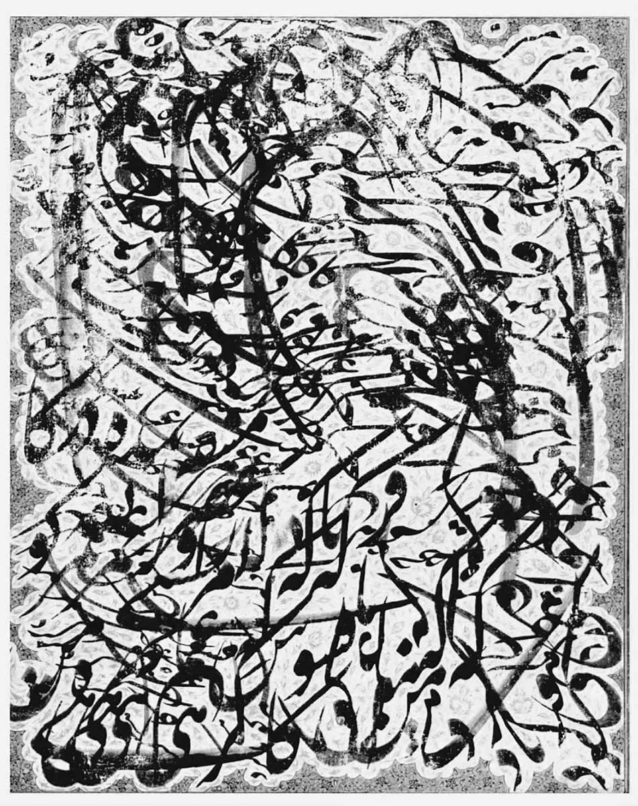
Here, writing is experienced as endurance. The page records effort, pressure, persistence more than clarity. Reading becomes difficult, even impossible. Yet something else becomes perceptible: the labor of the body, the rhythm of repetition, the threshold where discipline turns into something almost ecstatic. Writing continues even when it no longer needs to explain itself. The act outlives its original purpose.
This is not writing as communication—it is writing as devotion. Devotion to the gesture, to the form, to the act itself regardless of whether it produces meaning that can be extracted and carried away. The calligrapher does not write to anyone; the writing does not deliver a message. Instead, it marks the passage of time, the endurance of attention, the transformation that occurs when a practiced gesture is repeated past the point where it remains legible to itself.
Visually, Siyahmashq behaves less like a composition and more like an event. The eye moves without rest. There is no stable hierarchy, no foreground or background to settle into. The surface resists scanning. Instead, it pulls the viewer into proximity, into lingering. This mode of encounter aligns with practices of visual poetry and experimental writing found in works such as Christian Dotremont’s logograms or the visual texts gathered in Imagining Language, where writing approaches drawing and meaning emerges through gesture.
But unlike visual poetry that remains primarily gestural, Siyahmashq is produced through structure. Each mark belongs to a system of trained gestures. The rules do not collapse; they multiply. Their continuity overwhelms the surface they were meant to organize. In this tension—between structure and accumulation—the visual force of Siyahmashq takes shape. Illegibility here is not breakdown, but consequence of persistence.
What may appear unruly is, in fact, the result of discipline carried to its extreme. This is crucial: Siyahmashq is not chaos. It is order intensified to the point where order produces opacity. The calligrapher does not abandon the rules—the rules are what generate the density. Every stroke is correct, every letter properly formed. Yet their accumulation creates a field where correctness ceases to function as legibility.
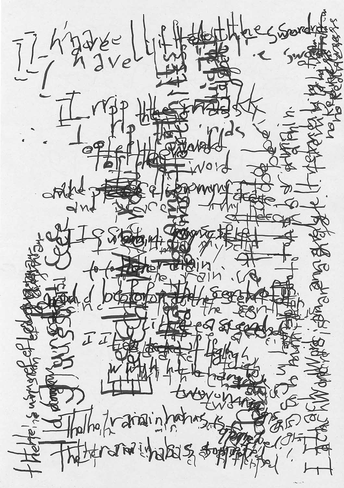
Siyahmashq becomes method for contemporary design research precisely through this transformation of historical calligraphic practice into a mode of inquiry. The question is: how does a centuries-old tradition of Persian writing exercises become operative for typography and visual research today? Through attention to what Siyahmashq actually does—it demonstrates that opacity is produced, that density is structured, that illegibility emerges from discipline extended past its breaking point. This is knowledge generated through practice, knowledge that cannot be articulated in advance but must be discovered through sustained engagement with material, tools, and repetition.
This paradox matters for my own practice. When I build typographic systems that strain under their own logic, when I repeat a gesture until the hand forgets its intention, when I layer Farsi and Latin scripts until neither can be read independently—I am not rejecting discipline. I am following discipline into the place where it exceeds itself.
My typefaces emerge from this process. By building density into the structure. A letter that carries the trace of every iteration. A glyph that remembers pressure, hesitation, return. The typeface does not stabilize form—it archives the descent into form. Each letter is a record of accumulation, of marks pressed into the same space until space itself becomes saturated.
Creative coding extends this logic into algorithmic repetition. I write scripts that iterate—generating form, layering it, iterating again. The code does not produce a single result but a field of results, each overlapping the previous, each contributing to density that cannot be parsed linearly. The output is descent—into complexity, into thickness, into the point where the system reveals not its solution but its capacity to overwhelm.
Scanning becomes an act of descent as well. The same page, scanned repeatedly, accumulating each capture, layering analog texture with digital artifact. Each scan darkens the field. Each iteration adds noise, grain, compression. The page descends into itself, becoming denser with each pass, until what remains is less an image of writing and more a record of descent—proof that the surface has been visited repeatedly, that attention has returned again and again to the same site.
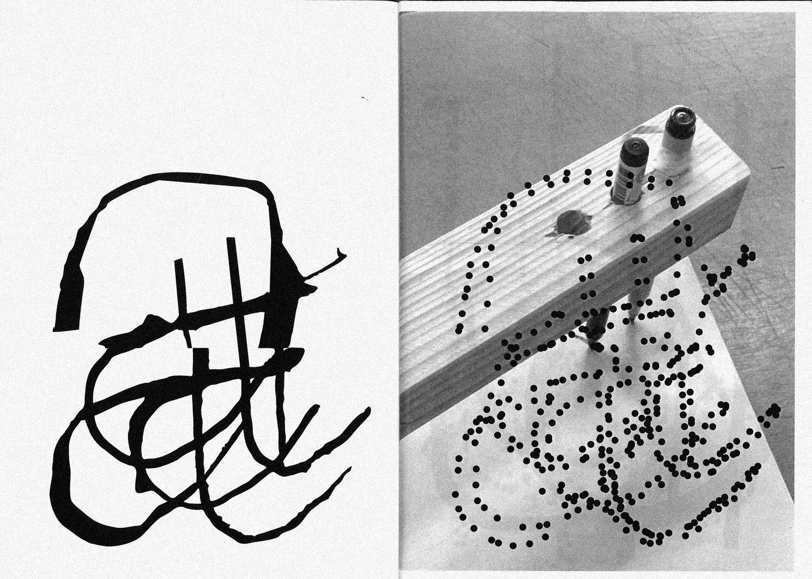
This is where opacity becomes method. Opacity is not the failure to communicate but the decision to remain in a place where communication as extraction is no longer possible. The work does not give meaning—it accumulates conditions in which meaning might form differently, slowly, through sustained attention.
Henry Corbin’s concept of the imaginal realm helps clarify this. The mundus imaginalis is not fantasy or symbol—it is a real realm, intermediate between pure intellect and sensory matter. In this realm, forms have substance but not materiality in the physical sense. They can be encountered, experienced, inhabited, but they do not resolve into either pure abstraction or literal objects. Siyahmashq operates as an imaginal space: neither pure mark nor pure meaning, but a field where writing becomes perceptible as presence without requiring legibility as condition.
The mystical traditions that inform this understanding have long recognized that knowledge does not arrive only through clarity. In Sufi practice, the annihilation of the self (fana) is not destruction but transformation—the dissolution of ego boundaries that allows a different kind of awareness to emerge. Siyahmashq enacts a similar dissolution: the dissolution of the individual letter into the field, the dissolution of meaning into gesture, the dissolution of reading into witnessing.
This is descent as purification. Not purification through removal, but purification through saturation. The page becomes so dense with marks that anything incidental, anything that does not belong to the essential gesture, is burned away by sheer repetition. What remains is not clarity but essence—the irreducible core of the practice stripped of everything except the act itself.
Federico Campagna, in Prophetic Culture, speaks of descent in terms of cosmological necessity. To create a new world—to engage in world-making—requires first descending through the collapse of the old world. The adolescent, suspended between worlds, must pass through a kind of death before emergence becomes possible. Siyahmashq models this passage: the death of legibility, the descent into blackness, and yet the insistence that the gesture continues.
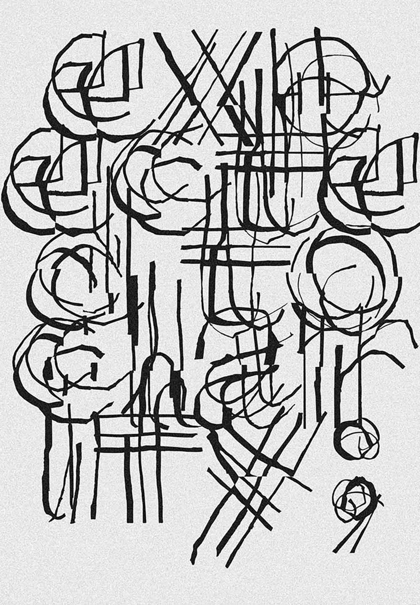
My practice inhabits this same necessity. To create writing that struggles is to descend into the place where writing no longer functions according to established rules. It is to continue marking the page even when the marks cease to communicate in conventional terms. It is to trust that something persists in the darkness—not as message, but as presence.
The page darkens. The marks accumulate. The surface becomes so dense that light no longer penetrates—it reflects, scatters, is absorbed. This is not the darkness of absence but the darkness of plenitude. Too much presence, not too little. Meaning overwhelmed by its own insistence.
And in this darkness, vision changes. The eye stops trying to decode and begins instead to feel—the weight of the marks, the rhythm of their placement, the density that resists scanning but rewards lingering. Attention becomes durational. Reading becomes inhabitation. The viewer does not extract sense but dwells within the field, adjusting slowly to conditions that cannot be grasped at speed.
This is what descent offers: not the loss of meaning but its redistribution. Meaning no longer resides in what can be read but in what can be felt—the pressure of repetition, the endurance of attention, the transformation of the hand that continues past the point where continuation serves any function except continuation itself.
Siyahmashq does not resolve. It remains dense, unsettled, open-ended. It hovers between discipline and undoing, between learned form and its gradual exhaustion. This unresolved state is not deficiency. It is precisely where its relevance persists. In the accumulation of darkness, another kind of light begins to appear—not as clarity, but as endurance, attention, and the possibility of seeing differently.
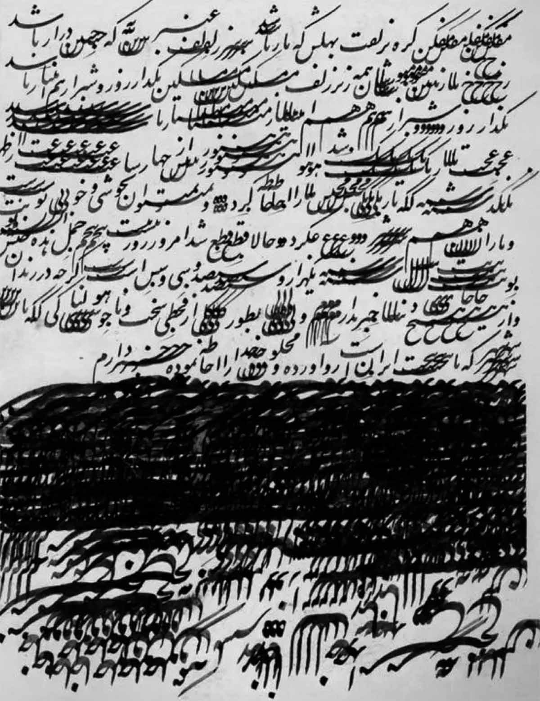
The descent is not escape. It is method. A way of thinking through opacity. A recognition that some forms of knowledge require us to enter the darkness voluntarily, to continue when the path is no longer visible, to trust that the gesture itself—repeated, accumulated, sustained—generates its own form of illumination.
This is how Siyahmashq enters contemporary design discourse: as evidence that accumulation, persistence, and disciplined excess generate forms of knowledge unavailable to transparent communication. What I bring from Siyahmashq into my own work is not an aesthetic but an ethics: the willingness to descend, to let systems exceed their function, to remain in density without demanding resolution. The typefaces I design carry this descent. The code I write iterates into thickness. The pages I scan accumulate darkness.
This is writing that does not flee from its own opacity but inhabits it, works within it, makes it the ground from which form emerges. Not writing that has failed to be clear, but writing that has chosen to descend—into materiality, into duration, into the place where meaning forms slowly, heavily, through the sheer insistence of repetition.
The hand continues. The marks accumulate. The page grows black. And in that blackness, something persists—not legible, not resolved, but present. Absolutely present.
After descent comes adjustment. The eye that has lingered in darkness does not return to daylight unchanged. It has learned to perceive differently—not by recovering what was lost, but by recognizing what was always there but illegible under the demand for clarity.
This is recognition without comprehension. Not the moment when meaning suddenly becomes clear, but the moment when the absence of clarity ceases to register as loss. The eye adjusts. The body settles. What was initially experienced as opacity begins to reveal structure—not semantic structure, but rhythmic, spatial, textural. The page does not resolve into readability, but it becomes inhabitable.
Recognition, in this sense, is not about understanding what something means. It is about learning to attend to what it does—how it moves, how it occupies space, how it distributes weight and pressure, how it unfolds in time. Meaning relocates from content to condition. The question shifts from what does this say? to what does this make possible?
When writing resists immediate legibility, time re-enters the act of reading. The viewer can no longer skim or consume the text at speed. They must linger, return, adjust their expectations. Understanding becomes provisional. In this temporal gap, aspects of language that usually remain secondary come forward: rhythm, density, pressure, spacing, absence. These qualities are often dismissed as decorative, yet they fundamentally shape how meaning is sensed, remembered, and embodied.
This aligns with what the Slow Technology Reader articulates: slowness not as nostalgia or resistance to progress, but as a deliberate strategy for reclaiming time, care, and agency. Slow technologies do not optimize performance or minimize friction; they create space for reflection, ambiguity, and sustained engagement. Delay becomes productive. It allows processes to unfold, allows perception to adjust rather than forcing immediate recognition.
My own practice depends on this delay. The typefaces I design do not announce themselves instantly. They require the eye to adjust, to learn their logic, to recognize patterns that emerge gradually through sustained attention. A letter that looked like noise at first glance begins to cohere after lingering. Not because it becomes clearer, but because the eye learns to see what was already there.
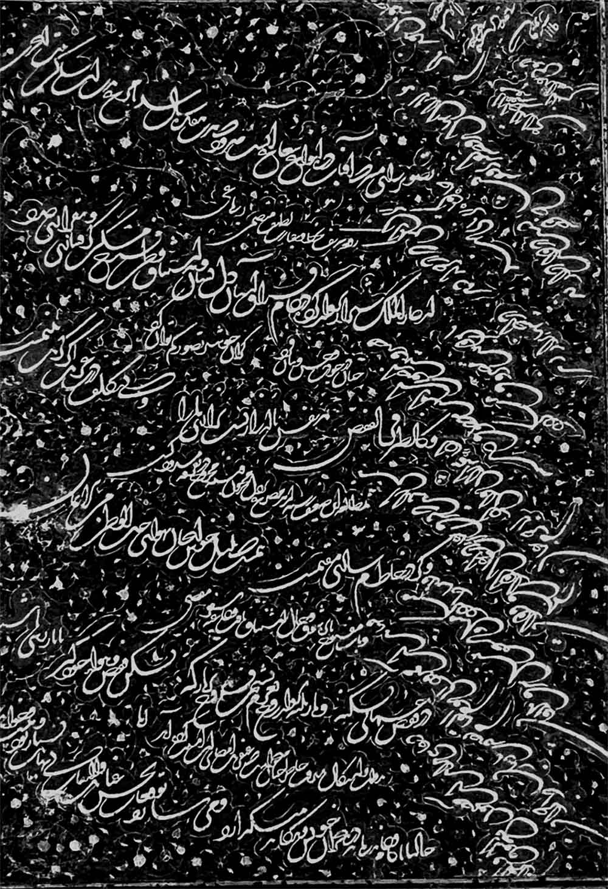
This is what Henry Corbin means by imaginal perception—not imagination as fantasy or invention, but imagination as an organ of perception. The imaginal realm is not less real than the physical world; it is differently real. It requires a different mode of attention, a different way of seeing. Forms in the imaginal are not symbolic representations of something else—they are presences that can be encountered directly, but only by those who have learned to perceive in that register.
Writing that struggles operates in this imaginal space. It is neither purely material (ink on paper) nor purely conceptual (ideas encoded in signs), but something intermediate. The marks are real. They have weight, texture, density. But what they mean is not fixed, not extractable, not translatable into paraphrase. They must be encountered as themselves—as presences that resist reduction.
Recognition happens when the viewer stops trying to decode and begins instead to witness. The shift is subtle but decisive. Decoding assumes a message to be extracted, a puzzle to be solved. Witnessing assumes presence to be attended to, duration to be inhabited. The text does not give up its secrets; it offers an encounter that changes the longer it lasts.
This is where visual poetry becomes relevant—not as metaphor, but as practice. In Christian Dotremont’s logograms, writing and drawing converge without one dominating the other. The marks are letters, recognizable as belonging to an alphabet, yet they exceed alphabetic function. They gesture, accumulate, drift. Meaning emerges not from what can be read but from the rhythm of the gesture, the density of the field, the way the hand moved across the surface.
The texts gathered in Imagining Language extend this principle: writing that operates at the threshold where language becomes image and image becomes language. Not illustration of text, not captioning of image, but a third mode where both coexist without hierarchy. Recognition in these works means learning to see writing as visual event and image as linguistic presence simultaneously.
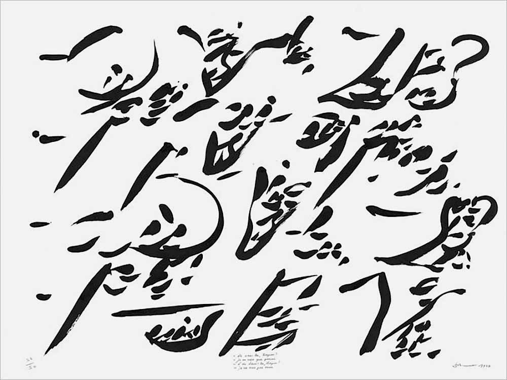
My bilingual and biscriptual practice works within this same threshold. Farsi and Latin scripts coexist on the page, neither translating the other, neither claiming priority. The eye trained in one script encounters the other as texture, as rhythm, as visual pattern before—if ever—it resolves into semantic content. For those who read both scripts, there is constant oscillation: sometimes reading Farsi, sometimes reading Latin, sometimes seeing both as pure form.
This oscillation is not confusion. It is a form of recognition that operates at multiple registers simultaneously. The eye learns to hold semantic reading and visual perception together without forcing one to dominate. This is not synthesis—the scripts do not merge into hybrid form—but coexistence. Recognition without resolution.
Documentation becomes a site of this kind of recognition as well. When I photograph or scan my work, I am not simply recording what exists. I am generating new encounters with the same forms. Each capture reveals different aspects: a photograph taken in raking light emphasizes texture; a high-resolution scan reveals details invisible to the naked eye; a low-resolution digital capture abstracts form into pixel grids.
Recognition happens through this accumulation of perspectives. No single view is definitive. The work is not fixed in a single state but exists differently depending on how it is encountered. This is not relativism—the work has material reality—but acknowledgment that recognition is always partial, always situated, always dependent on the conditions of attention.
The graduation project extends this principle into navigable space. The web-based environment I am developing does not present the research as linear document but as field to be explored. Text, image, code, and interaction coexist without predetermined hierarchy. The viewer does not follow a single path but constructs their own trajectory through the material. Recognition happens through navigation—through the choices of what to linger with, what to skip, what to return to.
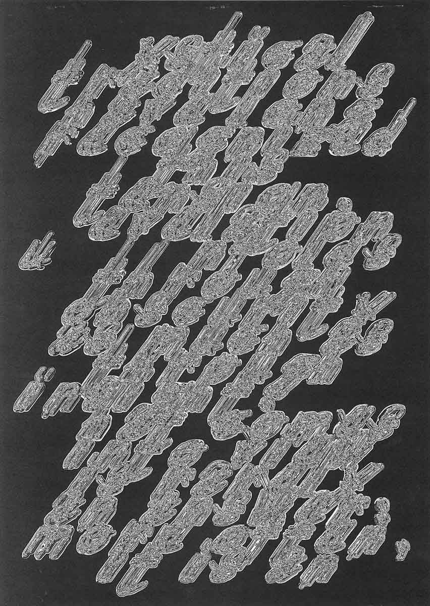
This is not about user experience in the conventional sense. It is about creating conditions where recognition can occur at the viewer’s own pace, through their own attention, without being forced toward predetermined conclusions. The environment is generous with time. It allows dwelling. It rewards return. It does not deliver meaning but makes space for meaning to form gradually, through sustained engagement.
Attention, in this context, becomes an ethical stance. To attend to something is to grant it time, to resist the impulse to categorize and move on, to remain with what does not immediately offer up its sense. This is the opposite of scrolling, of skimming, of the trained behaviors of digital consumption. It is a recovery of contemplation—not as religious practice, but as mode of engagement with form.
What becomes visible through this kind of attention is not hidden content waiting to be discovered, but relations—between marks, between rhythms, between densities, between what is present and what is absent. The page as field of relations. Writing as a way of organizing attention.
Recognition, then, is less about identifying what something is and more about sensing what it does. How does the density of marks affect the movement of the eye? How does the rhythm of repetition create expectation or disrupt it? How does the coexistence of scripts generate friction or harmony? These are not questions with single answers but questions that open onto sustained inquiry.
The work teaches the eye to see what it was not trained to notice. This is not revelation in the mystical sense—no sudden illumination—but gradual acclimation. The eye adjusts. The body learns. Recognition arrives not as flash of insight but as slow realization: this is what it has been all along.
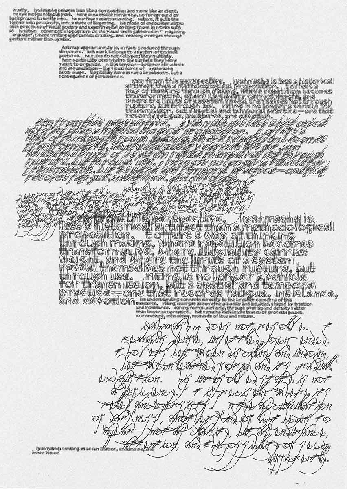
What was initially experienced as struggling—as resistance, as opacity, as refusal—begins to be recognized as simply being. The writing is not struggling to be something else. It is itself. Dense, accumulated, saturated, unresolved. The struggle was never in the writing. It was in the expectation that writing should be other than it is.
Recognition is the moment when that expectation releases its grip. When the viewer stops waiting for the text to clarify and begins instead to sense its presence—as weight, as rhythm, as duration. The marks do not speak, but they persist. They do not explain, but they insist. And that insistence, sustained long enough, becomes its own form of communication.
Not communication as transfer of content from sender to receiver, but communication as shared occupation of space, shared duration of time, shared condition of attention. The writing and the reader are both present, both implicated, both changed by the encounter. Recognition is the acknowledgment of that mutual transformation.
The page remains dense. The marks remain accumulated. Nothing resolves into clarity. But the eye has learned to see differently. And in that different seeing, what was opaque becomes perceptible—not as meaning decoded, but as presence recognized. Absolutely recognized.
Purification is not the removal of impurity. It is the intensification of essence through repetition, through constraint, through the deliberate limitation of means. What remains after purification is not perfection but clarity of purpose—the gesture stripped of everything except what is necessary for it to continue.
In mystical traditions, purification prepares the seeker for encounter with what cannot be grasped through ordinary means. Fasting, silence, repetition of prayer—these practices do not add knowledge but remove obstruction. They quiet the noise of habit, expectation, distraction. What emerges is not new capacity but heightened attention to what was always present but obscured.
Writing as practice operates through similar logic. The constraints I impose—limited tools, restricted parameters, specific rules—do not hinder the work but focus it. They remove the infinite paralysis of possibility and create a bounded field within which something can actually occur. Constraint enables. It channels energy that would otherwise dissipate.
This is where discipline becomes crucial, but discipline understood not as control but as commitment to a structure that allows discovery. Theodor Adorno’s essay form offers a model here. In The Essay as Form, Adorno describes the essay not as an incomplete system but as a deliberate refusal of system altogether. For him, thought does not advance by proof or deduction, but by constellation. Ideas gather through proximity; they touch, interfere, and remain partially unresolved.
The discipline of the essay is not the discipline of the treatise. It does not demand exhaustive coverage or logical closure. Instead, it demands fidelity to the movement of thought as it actually unfolds—tentative, recursive, open to deviation. The essay’s rigor lies in its honesty about the conditions of its own making, its refusal to present conclusions as more stable than they are.
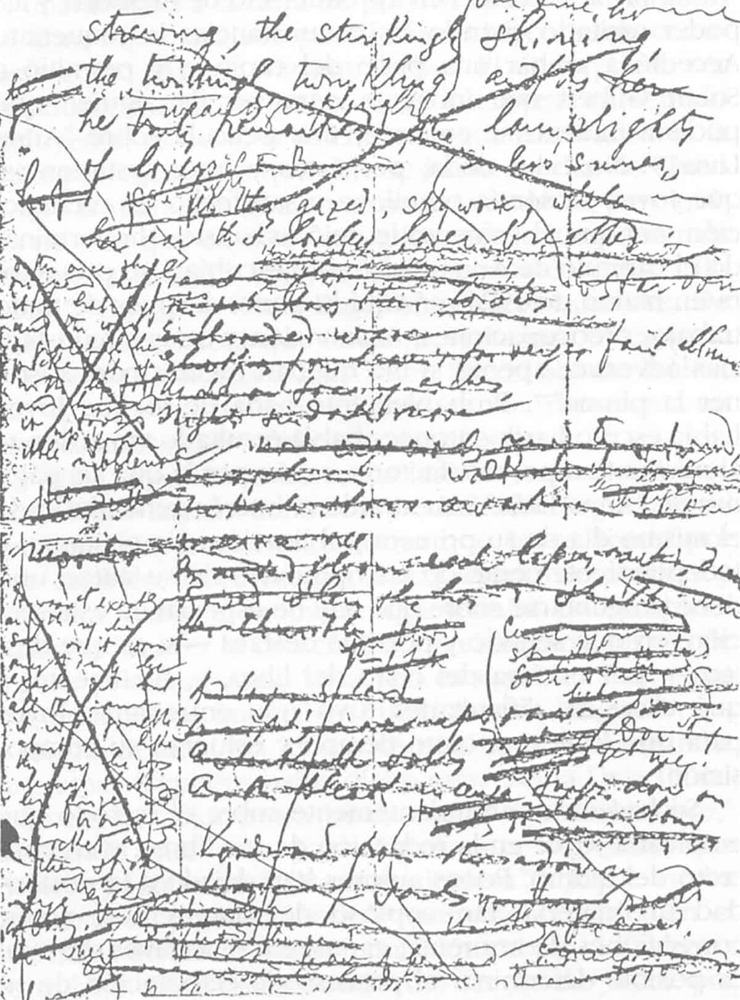
My research follows this essayistic discipline. It does not build toward a thesis that subordinates all observations to a single argument. Instead, it moves through a series of encounters—with materials, with references, with failures—each of which generates its own insights without being forced into predetermined hierarchy. The structure is not scaffolding erected before the work begins, but a path that reveals itself through walking.
Yet within this openness, specific disciplines structure the practice. Daily drawing becomes a form of purification through repetition. I set constraints: draw the same letter one hundred times, use only one tool, work within a limited time frame, do not correct errors. These constraints are not arbitrary. They create conditions where the hand can move beyond intention into something more automatic, more responsive to the moment.
The first marks are careful. The hand follows what it knows. But repetition erodes that knowledge. By the fiftieth iteration, the hand begins to drift. By the hundredth, it has forgotten what it was trying to do and simply continues. This is purification: the burning away of intention until only the gesture remains. What survives is not the perfect form but the essential rhythm—the pressure, the speed, the hesitation that defines the act of marking.
Type design operates through a different but related discipline. To design a typeface is to create a system—a set of forms that must maintain coherence across hundreds of glyphs while allowing for variation within defined parameters. The discipline is in defining those parameters clearly enough that they can guide decisions without determining every outcome.
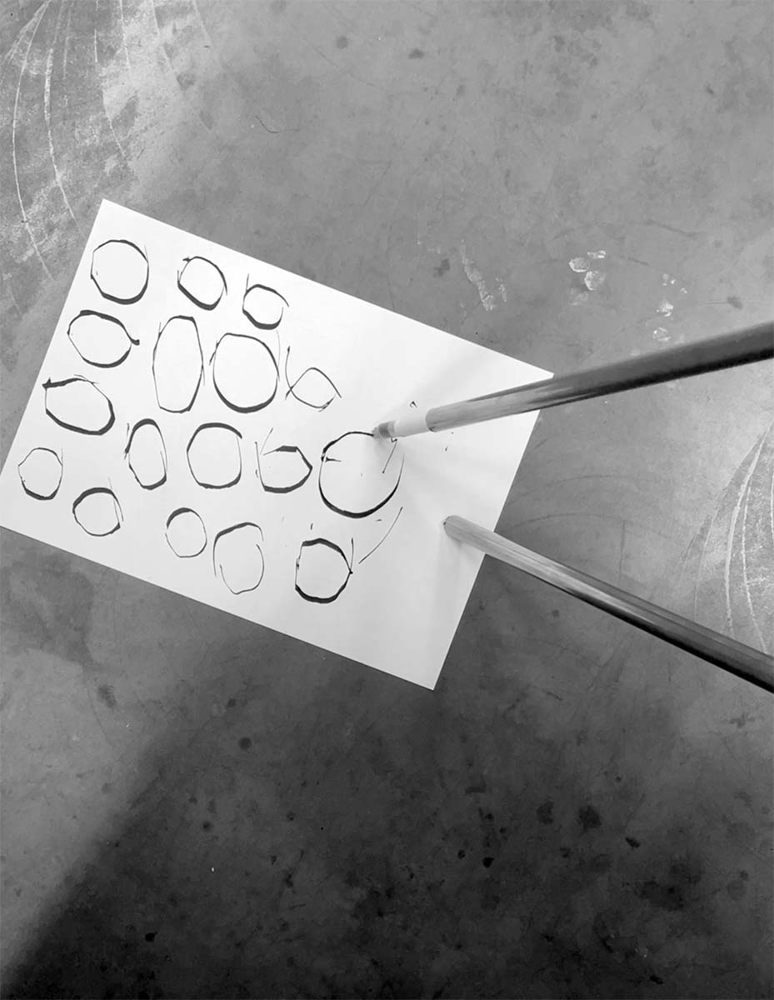
I design typefaces that emerge from the practice of struggling writing itself. By systematizing the variations—building the tremor into the structure, making the accumulation repeatable, encoding the trace of the hand into digital form. The typeface becomes an instrument for generating marks that carry the memory of their making, even when set by someone else, even when used in contexts I never anticipated.
Creative coding extends this discipline into algorithmic space. Code demands precision—a misplaced bracket, a forgotten semicolon, and the program fails to run. Yet within that precision, there is room for emergence. I write scripts that define rules—how forms should be generated, how they should interact, how density should accumulate—but the results surprise me. The code executes with exactness, yet produces outcomes I did not foresee because the rules, when followed consistently, reveal possibilities I had not imagined.
This is discipline as method: the establishment of constraints rigorous enough to focus attention but loose enough to allow discovery. Federico Campagna, in Prophetic Culture, speaks of the tetrapharmakon—four remedies for dwelling in the condition between worlds. Among them is discipline, but discipline understood as practice. Not the discipline that masters an object from outside, but the discipline that commits to a practice whose outcome cannot be known in advance.
The constraint of working bilingually and biscriptually functions as purification in this sense. To write in Farsi and Latin simultaneously is to refuse the ease of monolingual expression. Each script makes demands the other does not. Each carries histories of power and exclusion that cannot be ignored. The tension between them cannot be resolved—it can only be worked within, attended to, allowed to shape what emerges.
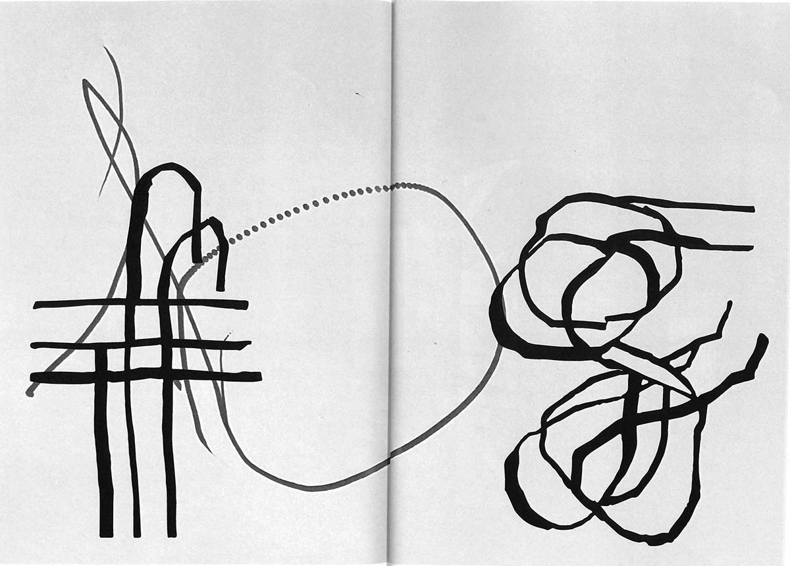
I do not try to create a hybrid script or a universal visual language. That would be colonization disguised as synthesis. Instead, I let the scripts coexist in their difference, let the friction between them generate forms that belong fully to neither but could not exist without both. The discipline is in maintaining that tension without forcing resolution, in staying faithful to the specificity of each tradition while allowing them to encounter each other.
Scanning becomes a discipline of repetition. The same page, scanned again and again at different settings, different angles, different times of day. Each scan is slightly different—variations in light, in pressure of the lid, in the scanner’s interpretation of contrast. These variations are not noise to be eliminated but data to be attended to. They reveal that the page is not fixed, that perception is always situated, that no single capture is definitive.
The practice purifies attention. Instead of scanning once and moving on, I return. I linger. I compare. I notice what changed and what persisted. This is not about achieving the perfect scan but about understanding the page through the accumulation of partial views. Purification here means removing the assumption that a single perspective is sufficient.
The project will embody these disciplines structurally. The web-based environment I am developing does not present content as linear sequence but as field structured by rules. The viewer can navigate, but their navigation is shaped by constraints—certain paths are more accessible than others, certain connections are emphasized, certain materials require effort to reach. The discipline is in designing those constraints carefully enough that they guide without dictating, that they create a coherent experience without determining every encounter.
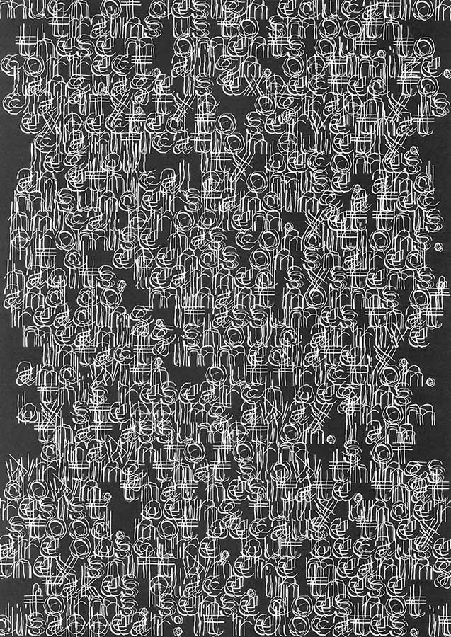
This aligns with practice-led research as articulated in Becoming Research: research not as method applied to object from outside, but as condition one enters. To research is to remain implicated, to work from within the material and cultural situations one investigates. The discipline is in maintaining that implication, in refusing the false objectivity of detachment.
Purification, then, is not about achieving purity—some pristine state free of contamination. It is about removing what obscures. Habit obscures. Assumption obscures. The demand for novelty obscures. Purification strips these away not to reveal truth but to create space where attention can function without predetermined outcomes.
The hand continues to draw. The code continues to execute. The scanner continues to capture. Not because these actions lead somewhere, but because the actions themselves, repeated with discipline, become the site where thinking occurs. Not thinking about the work, but thinking through the work, with the work, as the work.
This is the discipline the project requires: not mastery that stands above and controls, but commitment that remains within and persists. The constraints are chosen. The rules are established. The practice continues. And through that continuation—patient, repeated, faithful to the structure even when the structure produces the unexpected—form emerges that could not have been forced.
Purification does not produce certainty. It produces clarity of attention. And that clarity, sustained through discipline, allows the work to reveal not what was intended but what becomes possible when intention is burned away and only the gesture remains.
There is a realm that exists between pure thought and material sensation. Henry Corbin calls it the mundus imaginalis—the imaginal world. It is not imagination in the modern sense, not fantasy or invention, but a real realm with its own ontological status. In this intermediate world, spirits take body and bodies become spiritual. Forms have substance but not physical materiality. They can be encountered, experienced, inhabited, yet they do not belong to either pure abstraction or literal objects.
This is the realm where writing becomes cosmological practice—where the marks on a page are not representations of something else but presences in their own right, neither symbolic nor literal, but imaginal. To understand struggling writing as movement through this realm is to recognize that the project is not about designing better communication tools, but about creating conditions where a different order of reality can be encountered.
Corbin developed his concept of the imaginal through study of Iranian mysticism, particularly the visionary recitals of Suhrawardi and Ibn ‘Arabi. In these texts, the mystic does not ascend through abstraction alone but travels through landscapes that are simultaneously real and non-physical. The mundus imaginalis is where this travel occurs—a space that mediates between intellectual apprehension and sensory perception, where knowledge arrives through vision.
What matters for this research is recognizing that the imaginal is not metaphorical. It is a third mode of existence, as real as the physical world but operating according to different laws. Forms in the imaginal realm are not less substantial because they are not material—they are differently substantial. They have presence, density, duration. They affect those who encounter them. But they cannot be grasped through the categories designed for physical objects or abstract concepts.
Writing that struggles operates in this imaginal space. The marks on the page are material—ink, paper, pressure. But what they generate exceeds their materiality without becoming purely conceptual. The density of Siyahmashq is not symbolic of accumulation—it is accumulation, experienced as visual weight, as temporal duration, as perceptual pressure. The page becomes a threshold, an intermediate realm where material form carries immaterial force.
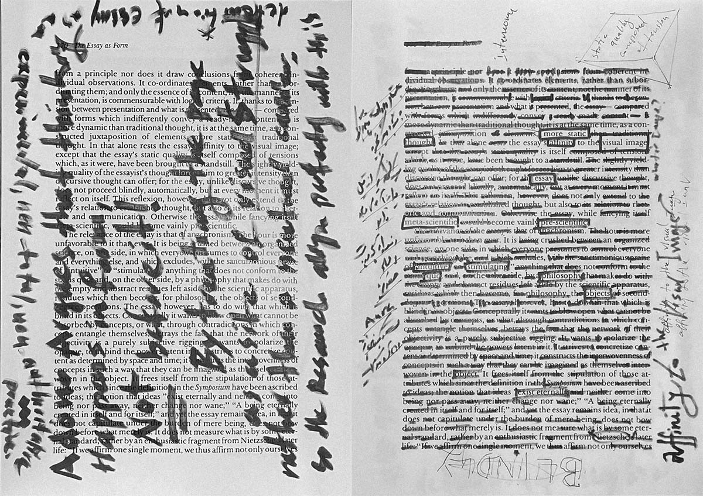
This connects directly to Federico Campagna’s understanding of world-making in Prophetic Culture. Campagna argues that what we call “the world” is not a given reality that we simply inhabit, but a construction—a set of ontological assumptions, linguistic structures, and perceptual habits that determine what can appear as real. When a world begins to collapse, when its structures no longer hold, the adolescent condition emerges: suspended between the dying world and whatever might come next.
The prophet, in Campagna’s framework, is not someone who predicts the future but someone who creates the conditions for a new world to emerge. Prophecy is world-making—the active construction of an alternative reality that others can inhabit. This is not escapism or fantasy. It is cosmological work: the establishment of new laws, new possibilities, new modes of existence.
Typography, approached this way, becomes prophetic practice. Not typography as service to existing communication needs, but typography as the creation of new conditions for what writing can be and do. The typefaces I design, the systems I build, the constraints I establish—these are not improvements to existing forms but attempts to generate forms that could not exist within the current order of things.
When I design a typeface that carries the trace of struggling—letters that tremble, accumulate, resist stabilization—I am not making a stylistic choice. I am proposing that letters can exist otherwise, that the alphabet is not fixed, that the very substrate of written language can be reimagined. The typeface does not serve the world as it is—it offers a fragment of a world that might be.
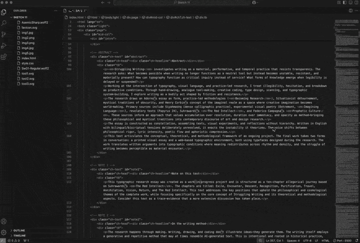
This is what Ursula K. Le Guin means by the carrier bag theory of fiction, which I have drawn on throughout this research. Le Guin argues against heroic narratives that move toward climax and conquest. Instead, she proposes stories that gather, hold, and sustain—that carry life forward without dominating it. The carrier bag is not a weapon but a container, not a tool for mastery but a tool for care.
My research operates as a carrier bag. It gathers fragments: calligraphic traditions, mystical texts, visual poetry, coding practices, scanned marks, theoretical positions. These fragments are not subordinated to a master narrative but held together in proximity, allowed to touch and interfere without being forced into hierarchy. The research carries them forward, sustains them in relation, but does not resolve them into a single world-conquering argument.
This is world-making as accumulation. Not the proclamation of a new universal system, but the patient gathering of conditions under which alternative modes of existence become perceptible. The work does not announce a world—it builds one slowly, through repeated gestures, sustained attention, disciplined practice.
The web-based project embodies this cosmological dimension literally. It is not a presentation of research but the construction of a navigable realm. The viewer does not read about struggling writing—they move through it. Text, image, code, and interaction combine to create an environment with its own logic, its own laws, its own modes of disclosure.
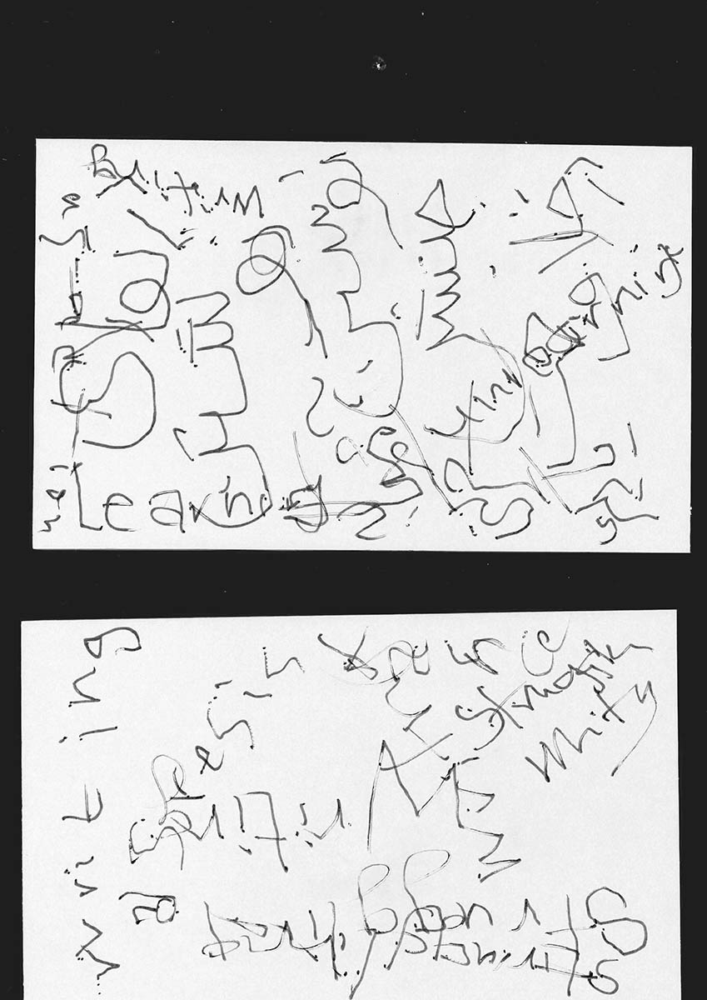
In this environment, reading is spatial practice. The viewer chooses where to go, what to linger with, what to skip. But their choices are shaped by the structure I have designed—certain paths are easier, certain connections more obvious, certain materials require deliberate effort to reach. The space is generous but not neutral. It has topology, rhythm, density. It is a world, however small, however temporary.
This aligns with Corbin’s understanding of the imaginal city—the visionary landscapes described in Suhrawardi’s The Red Intellect and similar texts. The seeker does not imagine the city in the sense of inventing it freely. The city is encountered—it has architecture, geography, inhabitants. But it exists in the imaginal realm, not the physical. It is real without being material, substantial without being empirical.
This project proposes a similar encounter. The typographic environment I am building exists digitally, yes, but the digital is not opposed to the real. It is another mode of the real, another way substance can manifest. The viewer encounters forms that have presence—visual weight, temporal duration, interactive resistance. These forms are not illustrations of concepts. They are imaginal presences, existing in that intermediate realm where writing becomes world.
Working bilingually and biscriptually extends this world-making dimension. Farsi and Latin are not just different scripts—they carry different worlds. Each script organizes perception differently, moves the hand differently, structures time differently. To work with both simultaneously is to inhabit multiple worlds at once, to feel their friction without resolving it into synthesis.
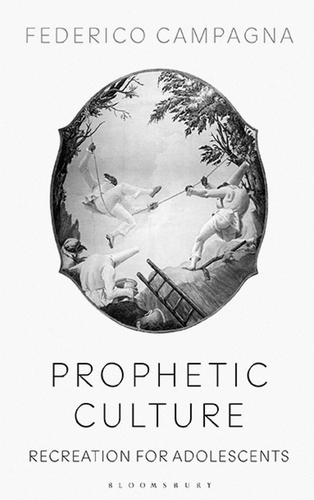
This is not multiculturalism in the liberal sense—the celebration of diversity within a single overarching framework. It is the recognition that worlds are incommensurable, that they cannot be translated without remainder, that to move between them requires transformation. The work I make in this threshold space does not belong fully to either world but could not exist without both.
Siyahmashq functions here as a model for how density creates world. The blackened page is not representation of darkness—it is darkness made substantial, made perceptible, made inhabitable. The eye that enters that density enters a different mode of vision, a different relation to form and void. The page becomes cosmological space—not illustrating a concept of cosmos, but enacting one.
This is what Campagna means by “otherworlds”—not fantasy realms but genuinely alternative ontologies, different structures of what can be and how it can appear. The otherworld is not elsewhere in geographical space but elsewhere in ontological register. It coexists with the everyday world but operates according to different laws.
Typography, at this scale of ambition, does not design for the world but designs worlds. Each typographic system establishes laws—what shapes are possible, how they interact, what rhythms they follow. These laws are not arbitrary. They emerge from constraints, from materials, from historical traditions. But within those constraints, they create space for forms that would not otherwise exist.
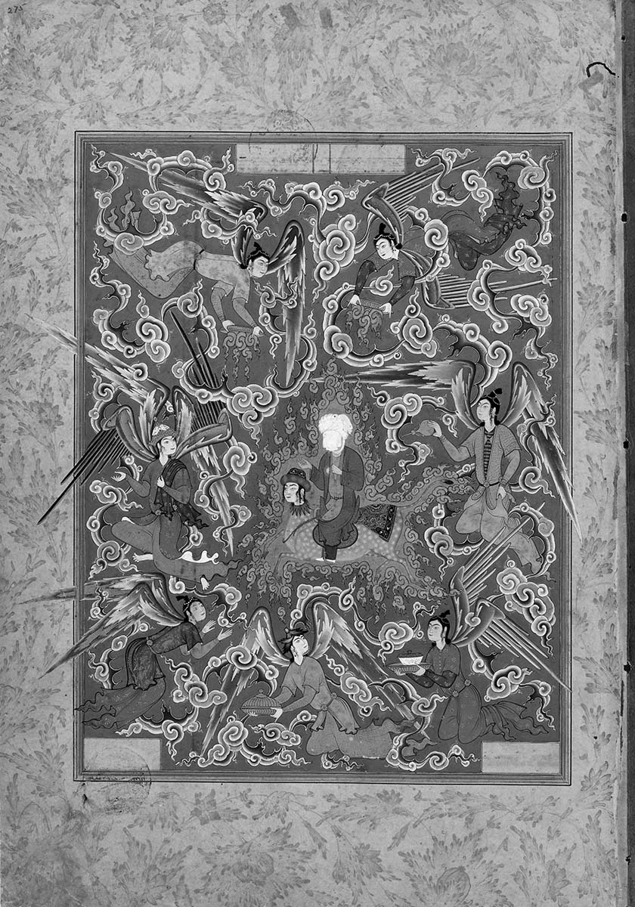
My creative coding practice works precisely at this threshold. The code I write establishes rules for a generative system. But the system, once established, produces forms I did not imagine. It has its own logic, its own momentum. It becomes a world in miniature—bounded by parameters I set, but alive with possibilities I did not foresee.
This is travel in the deepest sense: not movement across fixed space, but movement through orders of reality. To travel through the imaginal is to pass through thresholds where the laws change, where what was solid becomes permeable, where what was invisible takes form. The journey is not metaphorical—it involves real transformation, real encounter, real risk.
The research itself has been this kind of travel. Beginning in exile, encountering materiality, descending into opacity, learning to recognize what cannot be decoded, submitting to discipline—each chapter has been a threshold, a passage into different conditions. And now, in this chapter, the recognition arrives: the journey is not through a single world but through the imaginal realm itself, that intermediate space where multiple worlds interpenetrate.
What I am making, then, is not a thesis about writing but a fragment of a world where writing can exist otherwise. The typefaces, the code, the scanned pages, the web environment—these are not illustrations or demonstrations. They are architectural elements of an imaginal realm, pieces of a cosmos that operates according to laws different from those that govern instrumental communication.
This is the prophetic dimension Campagna describes: not predicting what will be, but creating conditions for what might be. Not announcing the new world but building it, one gesture at a time, one constraint at a time, one encounter at a time. The work accumulates not toward a revelation but toward the slow construction of a dwelling-place, a realm that can be inhabited even if only briefly, even if only partially.
And this, finally, is why the project must remain unresolved. To resolve it would be to close the world it is trying to open. To stabilize it would be to deny its nature as threshold, as passage, as intermediate realm. The work stays in motion because motion is its mode of existence. It continues to struggle not because it has failed to achieve clarity, but because struggle is the way it remains alive to the imaginal—that realm where spirits take body and bodies become spiritual, where writing becomes world.
The page fills. The code iterates. The viewer navigates. And in that activity—material but not merely physical, meaningful but not reducible to message—a fragment of the imaginal makes itself felt. Not as escape from the world, but as remainder: the recognition that other worlds are possible, that reality is not exhausted by what currently exists, that writing can be a way of traveling through orders of existence we have been taught to ignore.
This is travel not as tourism but as transformation. The journey changes the traveler. And the worlds one passes through—imaginal, real, constructed through sustained attention and disciplined practice—remain as evidence that the journey was not imagined but encountered. Absolutely encountered.
To travel through the imaginal is to accept that the self who began the journey will not be the self who returns. Transformation is not optional. The mystics call this fana—annihilation. Not death, but the dissolution of boundaries that separate the seeker from what is sought. The ego does not strengthen through the journey—it thins, becomes permeable, eventually dissolves.
This is terrifying and necessary. What must be annihilated is not the person but the fantasy of mastery—the belief that the maker stands outside the work, controlling it, directing it toward predetermined ends. In truth, the maker is implicated. The work shapes the maker as much as the maker shapes the work. To pretend otherwise is to remain in the illusion that separates subject from object, that imagines creation as domination.
The Situationist International understood something of this when they described the spectacle. Guy Debord argued that the spectacle is not an excess of images but a transformation of lived relations into representations. Life becomes something watched, consumed. Expression continues, but as proxy—mediated, formatted, detached from the conditions of its making.
Writing is deeply implicated in this condition. The promise of fluent communication depends on a quiet erasure: the erasure of the body that writes, the gesture that hesitates, the time it takes for marks to form. Language appears to move effortlessly, concealing the labor, hesitation, and uncertainty that once accompanied inscription. Fluency comes to feel natural, even ethical, while friction is framed as error. In this sense, fluency becomes more than technical achievement—it becomes ideology.
The Situationists proposed détournement as response: not opposition from outside, but redirection from within. Nothing begins clean. Every sign arrives already shaped by circulation, habit, power. The task is not to invent from zero but to redirect momentum—to take what already moves smoothly through the world and make it hesitate, stumble, turn back on itself.
In writing, this redirection does not appear as overt negation. It emerges quietly, when legibility falters, when repetition exceeds function, when reading slows and attention drifts away from message toward condition. What is interrupted is not communication itself but the assumption that communication should proceed without resistance. Meaning is not denied; it is delayed.
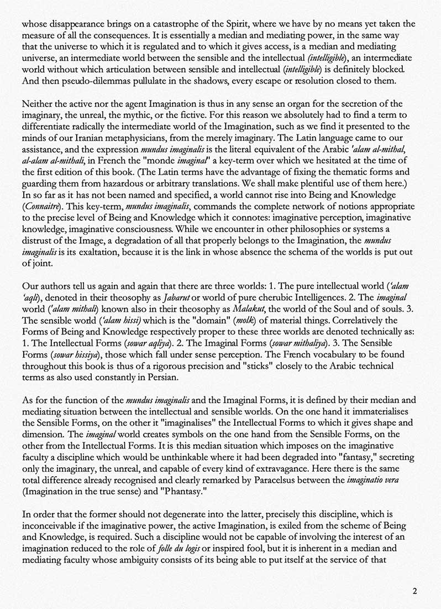
My practice operates through this logic of détournement. I do not reject the alphabet or abandon typographic systems. Instead, I work inside them, pushing their rules until they produce outcomes they were not designed to generate. The typeface that carries tremor. The grid that overflows its boundaries. The code that iterates beyond legibility. These are not new inventions but redirected inheritances—forms twisted slightly away from their intended function.
This is where annihilation becomes method. To let the system exceed my control is to accept that I cannot master it. The creative coding scripts I write execute with precision, but their results surprise me. The algorithm follows rules I established, yet produces forms I did not foresee. At a certain threshold, the work begins to generate itself. I become witness, participant.
This is not abdication of responsibility. It is recognition that responsibility means remaining responsive to what emerges. The maker does not disappear—but the maker’s role changes. Instead of standing above the work and directing it, the maker enters the work and moves with it, adjusting, responding, allowing the work to teach what it knows.
Federico Campagna describes annihilation as cosmological necessity in Prophetic Culture. To create a new world requires first passing through the death of the old. The adolescent, suspended between worlds, must undergo a kind of dissolution before anything new can coalesce. This is not metaphorical death but real transformation—the shattering of assumptions, the collapse of structures that once felt solid, the vertigo of finding oneself without ground.
My practice has passed through such moments. There have been systems that failed entirely, producing nothing but noise. Code that crashed. Drawings that accumulated into illegibility without revealing anything except excess. These failures were not obstacles to be overcome but passages to be endured. They marked the points where my intention dissolved, where the work exceeded what I could anticipate, where I had to accept that mastery was not available.
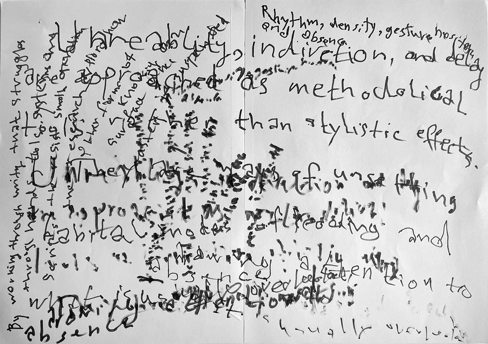
What remains after such dissolution is not certainty but attention. If I cannot control the outcome, I can at least attend to the process. If the work will not obey my intentions, I can still remain present to what it does instead. This is annihilation as practice: the ongoing surrender of the fantasy that I know in advance what I am making.
Siyahmashq offers a model here as well. The calligrapher does not master the page through Siyahmashq—the page overwhelms the calligrapher. The marks accumulate past the point where individual control matters. What continues is the gesture, repeated so many times that it outlives intention. The hand moves automatically. The eye no longer guides. Something else takes over—not inspiration in the romantic sense, but a kind of dissolution into the practice itself.
This aligns with mystical traditions that understand annihilation not as endpoint but as threshold. In Sufi practice, fana is not the destruction of the self but its transformation. The boundaries that separate the individual from the divine, the ego from the absolute, do not thicken through practice—they dissolve. What emerges is not a more powerful self but a more permeable one, capable of participating in what exceeds individual consciousness.
I am not claiming mystical experience. But I recognize something similar in the practice of making: moments when the self that insists on authorship dissolves, when the work continues without requiring my conscious direction, when I become conduit. These moments are brief, fleeting, but they mark the places where annihilation opens space for something other than mastery.
The ethical dimension here is crucial. Mastery is not neutral. It carries histories of domination, colonization, the violence of imposing order from above. To refuse mastery is to refuse that lineage. It is to work instead from within, implicated in the materials and traditions one inherits, responsive to what emerges.
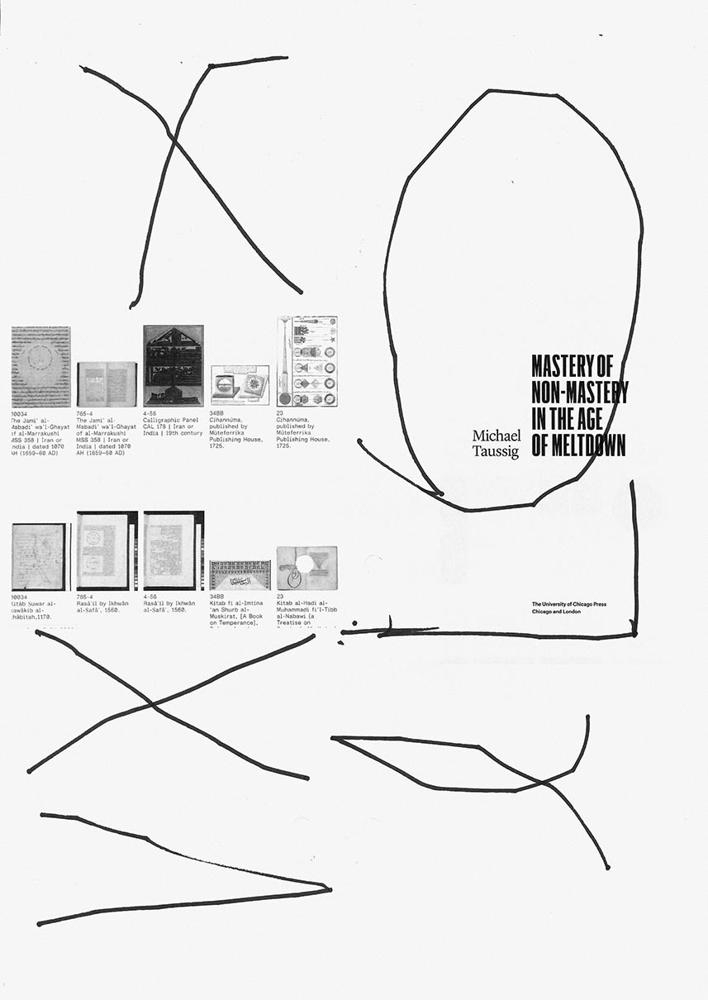
This is why the bilingual and biscriptural dimension of my practice matters politically. To insist that Farsi and Latin coexist without one dominating the other, without forcing them into synthesis, is to refuse the logic of mastery that would resolve difference into unity. The scripts remain distinct, remain in tension, and that tension is not weakness but method.
Scanning, too, participates in this loss of control. I scan the same page repeatedly, but I cannot fully control what the scanner captures. Light shifts. Dust settles. The scanner’s sensor reads differently depending on temperature, humidity, age. Each capture is slightly different, revealing that the page is not fixed, that my attempt to document it only generates more variation. The act of trying to master the image through documentation produces its opposite—proliferation, difference, uncontrollability.
The web-based project will extend this principle structurally. The viewer navigates, but I cannot determine their path. The work offers possibilities, but the viewer makes choices I cannot predict. The environment has structure, but that structure does not dictate experience. What unfolds is interaction, encounter, the meeting of two agencies that neither controls the other.
This is annihilation as ethics: the refusal to dominate, the willingness to be shaped by what one makes, the acceptance that creation is always co-creation, that the work has its own life, its own momentum, its own capacity to exceed what was intended. The maker does not vanish—but the maker’s sovereignty does.
There is risk here. To surrender mastery is to accept that the work might fail, might produce nothing, might refuse to cohere into anything recognizable. There is no guarantee. But mastery itself is a kind of failure—a failure to remain open, a failure to allow transformation, a failure to recognize that control is illusion.
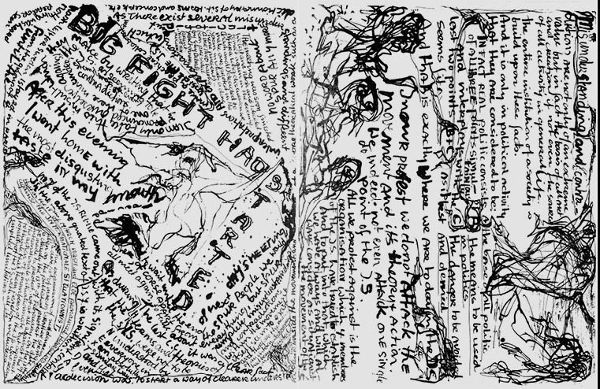
What persists after annihilation is not nothing. It is attention without agenda, presence without dominance, participation without possession. The hand continues to mark the page. The code continues to execute. The scanner continues to capture. But the one who makes these things has learned not to stand above them, not to force them toward predetermined ends, but to move with them, to let them teach, to accept transformation as condition.
Annihilation is not the end of making. It is the beginning of making that does not mistake itself for mastery. The work continues, but the one who makes it has been dissolved and reconstituted—not stronger, but more permeable, more responsive, more willing to be shaped by what exceeds control.
The page fills. The system overflows. The self that began has thinned enough to let something else through. This is not transcendence. It is immanence—the recognition that the divine, the real, the meaningful does not arrive from outside but emerges through the dissolution of the boundaries that separate inside from outside.
What remains is practice without mastery, making without domination, writing that struggles not because it has failed but because it has learned that to struggle is to remain alive to what exceeds control. Absolutely alive.
After annihilation comes vision. Not the vision of mastery that surveys from above, but vision that emerges through darkness, through dissolution, through the willingness to remain in conditions where sight does not function as it once did. This is the vision Suhrawardi describes in The Red Intellect: not illumination that banishes darkness, but illumination that appears within darkness, because of it, as its consequence.
The word apocalypse is commonly associated with endings: collapse, catastrophe, the final image after which nothing follows. Its older meaning is different. Apokalypsis: unveiling. Not destruction, but a shift in how the world is read. What is disturbed in apocalypse is not the world itself but the systems through which the world is interpreted. The veil lifts. What was hidden becomes visible. But visibility does not arrive as clarity—it arrives as intensity, as excess, as more than can be processed through habitual perception.
Approached from this angle, apocalypse describes a condition of interpretation. It emerges when established systems of meaning begin to strain, when language loses its smoothness, when symbols gather weight and signs resist settling into stable sense. Writing grows dense. Images accumulate. Metaphors multiply. Meaning does not resolve; it insists.
This condition is already present in the structure of revelatory writing. The Book of Revelation advances through repetition and saturation. Vision follows vision. Language presses forward without clarifying what it announces. The fragment known as Papyrus 24 makes this tangible. Torn and incomplete, the text appears as a surface shaped by transmission, erosion, and time. What remains legible is persistence itself—the determination of writing to continue despite fragmentation.
Mystical traditions have long recognized this tension. Revelation unfolds through obscurity as much as through insight. What comes into view is rarely an answer; more often, it is an encounter with the limits of language. Understanding requires endurance. Attention must be sustained across uncertainty. Writing, under these conditions, becomes an act of devotion—a way of marking time when meaning refuses to settle.
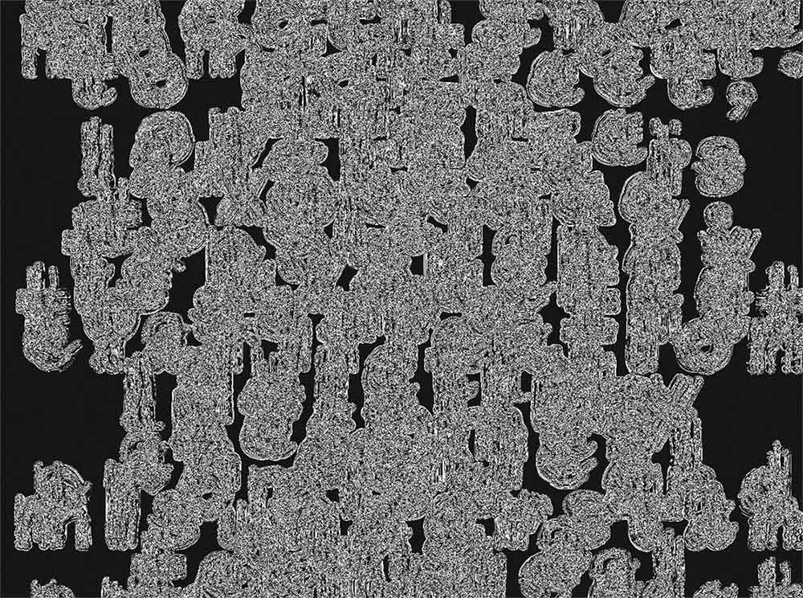
Archives quietly confirm this endurance. Manuscripts, marginal notes, overwritten pages, damaged and repaired texts show how language persists under pressure. Ink fades. Scripts shift. Surfaces wear thin. Legibility survives unevenly, carried forward through material traces. Writing continues, even as coherence loosens.
From this perspective, the crisis implied in apocalypse concerns reading itself. Familiar grammars lose their authority. Signs become unstable, overloaded, or strangely inert. Writing gathers symbolic force beyond its own control. What surfaces is not a final truth but an awareness of how fragile interpretation has always been—how dependent it is on habit, repetition, and shared frameworks.
This condition resonates with practices that allow writing to remain unresolved. Meaning travels slowly. Understanding emerges unevenly, sometimes incompletely. The reader moves through the text less as decoder and more as witness, drawn into the duration of reading. Attention becomes an ethical stance.
What becomes visible through sustained attention to struggling writing is not hidden content but structure. Not structure in the architectural sense—stable, fixed, measurable—but structure as dynamic pattern, as rhythm that persists through variation, as relation that holds even when individual elements become illegible. This is what the eye learns to see after descent, after recognition, after annihilation: the persistence of form through dissolution.
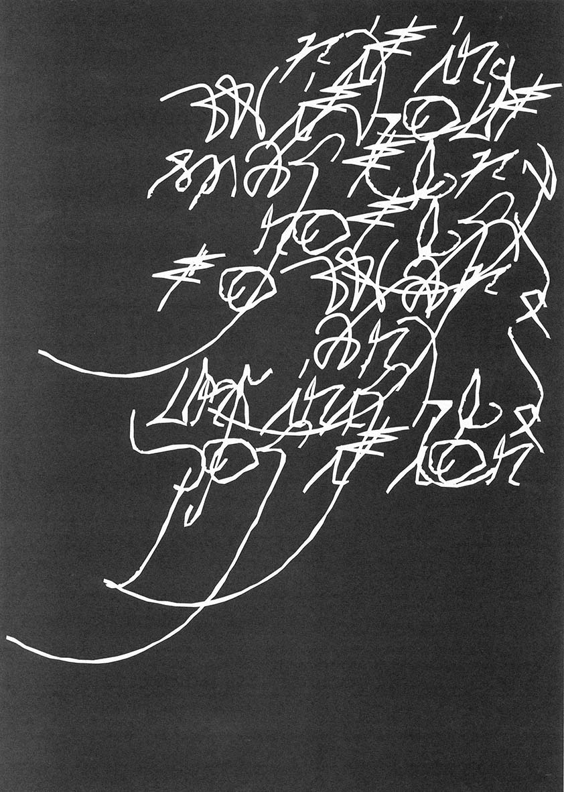
In Siyahmashq, vision of this kind is literal. The blackened page does not reveal individual letters but makes visible the field itself—the density, the accumulation, the temporality of marking. What appears is not text but texture, not message but membrane. The page becomes surface that holds time, that records pressure, that shows the trace of sustained attention even when that attention has exceeded the bounds of legibility.
This is imaginal vision in Corbin’s sense: perception that operates in the intermediate realm, where forms have presence without being physical, where seeing requires a different organ than ordinary sight. The imaginal eye does not decode symbols or identify objects. It perceives presences—forms that are real without being material, substantial without being tangible.
My own work seeks this kind of vision. The typefaces I design do not offer immediate legibility. They require the eye to adjust, to learn their rhythm, to recognize patterns that emerge slowly. What becomes visible is not clearer letters but different organization—weight distributed differently, spacing functioning according to other logic, forms that cohere through density.
The creative coding produces vision of another kind. When the algorithm iterates thousands of times, generating layer upon layer of marks, what emerges is not chaos but emergent pattern. The eye cannot track individual operations, but it perceives the aggregate—the field effect, the statistical texture, the visual equivalent of white noise that, sustained long enough, begins to organize into structure the maker did not consciously design.
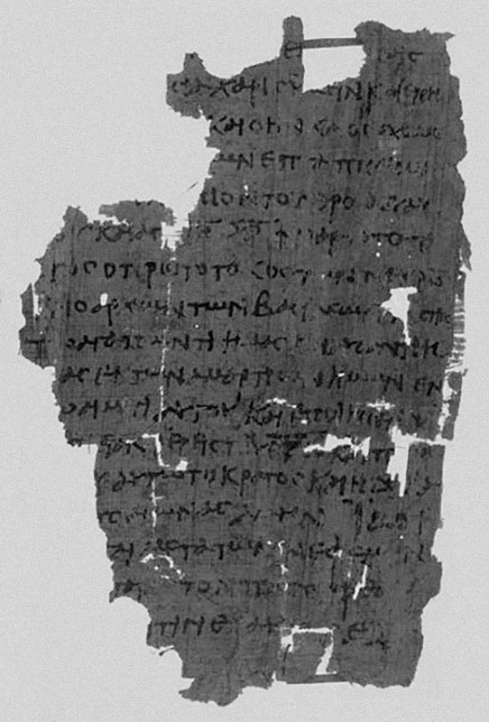
This is vision that emerges through accumulation. Not the vision of analysis that breaks things into parts, but the vision of synthesis that perceives wholes too complex to be grasped analytically. The page does not reveal its secret through being decoded. It reveals itself through being inhabited, through sustained presence, through the willingness to remain long enough for patterns to coalesce.
Scanning participates in this unveiling as well. Each scan reveals different aspects depending on settings, light, resolution. No single scan captures the truth of the page. But the accumulation of scans generates a kind of composite vision—a sense of the page as phenomenon, as event. What becomes visible is variability itself, the recognition that the page exists differently under different conditions of attention.
The bilingual and biscriptual dimension adds another layer of vision. For those who read both Farsi and Latin, there is constant oscillation between semantic reading and visual perception. The scripts do not merge but flicker—sometimes readable, sometimes pure form, sometimes both simultaneously. This flicker is itself a kind of vision: the perception that meaning and form are not separate categories but aspects of a single phenomenon that appears differently depending on how attention is directed.
Federico Campagna speaks of vision in terms of the “memory of having forgotten” in Prophetic Culture. What the prophet remembers is not content from the past but the structure of forgetting itself—the recognition that worlds are constructed, that reality is not given but made, that beneath the apparent solidity of the present lies the contingency of choices made and alternatives suppressed. Prophetic vision sees through the world as it is to the worlds that might have been or might yet be.
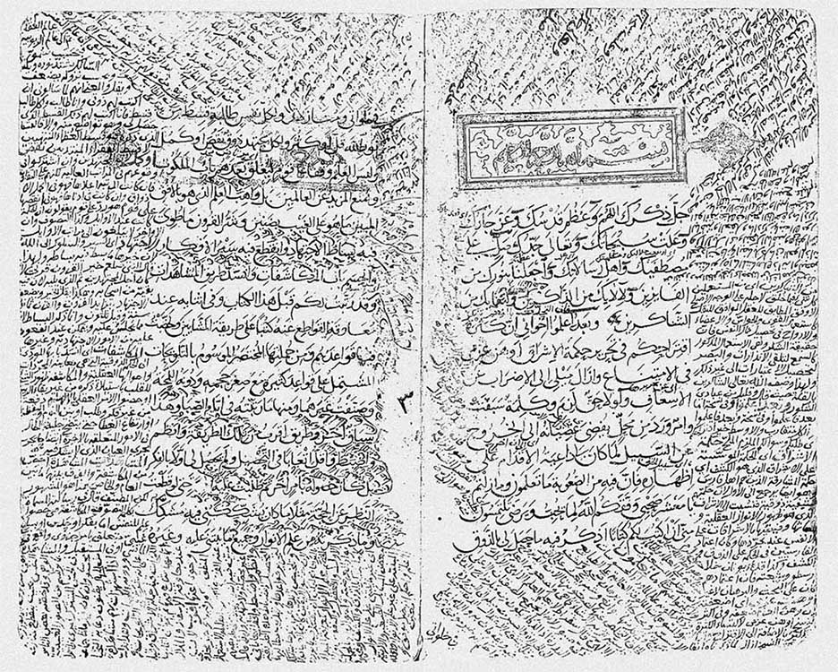
This is the vision struggling writing seeks: not revelation of what lies behind appearance, but perception of appearance itself as phenomenon, as choice, as construction that could be otherwise. The marks on the page are not symbols pointing beyond themselves to hidden meanings. They are themselves the meaning—presences to be encountered, densities to be felt, rhythms to be inhabited.
What holds through this density is relation. Writing forms a field where time, memory, and attention accumulate. Its strength lies in its capacity to register what exceeds comprehension, to hold traces of what cannot be fully articulated. Language continues, aware of its own limits, yet unwilling to fall silent.
The graduation project will offer this kind of vision structurally. The web-based environment does not explain but invites encounter. The viewer navigates through densities, through accumulations, through fields where text, image, and interaction coexist without hierarchy. What becomes visible depends on where attention lingers, on what the viewer chooses to explore, on how long they remain.
This is not relativism—the work has structure, has specificity, has conditions it insists upon. But those conditions do not dictate a single reading. They create a space within which multiple visions become possible, each legitimate, each partial, each dependent on the duration and quality of attention brought to the encounter.
Vision, in this sense, is not passive reception but active participation. The eye does not simply register what is there. It constructs, interprets, brings its own histories and expectations to the encounter. The work does not give up its meaning to the eye—it meets the eye halfway, offers resistance, requires negotiation.
What apocalypse unveils, then, is not hidden truth but the activity of seeing itself. The recognition that vision is always constructed, always partial, always dependent on conditions that could be otherwise. To see struggling writing is not to decode its message but to witness its operation, to feel its pressure, to sense its duration, to recognize that it persists as presence even when—especially when—it refuses to resolve into clarity.
The marks remain. The density persists. The page continues to hold what it has accumulated. And in that persistence, something appears—not as revelation of content, but as recognition of presence. The imaginal image: real without being material, visible without being clear, present without being graspable. Absolutely present.
The journey through the imaginal cannot end where it began. The seeker who descends, who is annihilated, who sees differently—this seeker must return. But return is not reversal. It is not the cancellation of transformation but its completion. What was found in darkness, in dissolution, in vision—this must be brought back, carried into the world that continues without pause, without acknowledgment that anything has changed.
This is the difficult part. The imaginal realm is real, but its reality does not translate easily. Forms encountered there have presence, substance, force—but that force weakens when brought into ordinary discourse. Language fails. Explanation flattens. What was visionary becomes merely visual. What was transformative becomes merely interesting.
Yet the return must happen. To remain in the imaginal is to abandon responsibility to the world that is. The mystic who stays in ecstasy, the artist who never shares the work, the researcher who never writes the thesis—these are failures not of vision but of courage. The return requires carrying what cannot be fully carried, articulating what resists articulation, making present what belongs to another order of reality.
This is where documentation matters, but documentation understood not as neutral recording but as form of translation. When I photograph the pages I have made, scan the marks I have accumulated, screen-capture the code-generated forms—I am not simply preserving what exists. I am attempting to carry presence across thresholds, to make the imaginal perceptible to those who have not traveled there directly.
Each documentation is a betrayal and a gift. Betrayal because the photograph is not the page, the scan is not the mark, the screen capture is not the living process. Something is always lost in translation. But gift because without translation, nothing crosses over. The work remains isolated, available only to the maker, sealed within the conditions of its making.
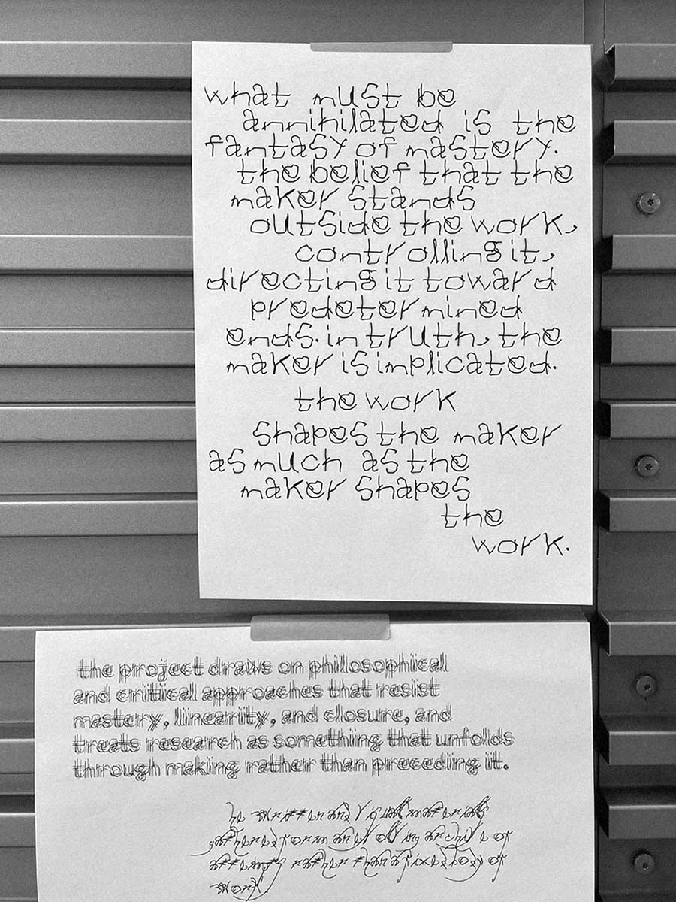
The essay itself is a form of return. Theodor Adorno understood this: the essay does not present finished knowledge but carries thought in motion, thought still struggling with its materials, thought that has not yet resolved into system. The essay form allows the imaginal to persist in writing—allows uncertainty, allows contradiction, allows the constellation of ideas that touch without merging.
This research document operates as such an essay. It does not present conclusions but carries traces of a journey. Each chapter is a threshold crossed, a condition inhabited, a transformation undergone. The reader does not receive information but follows a path—not the same path I traveled, but a path made possible by my traveling. The document functions as map not of territory but of movement, showing not where things are but how they can be traversed.
Ursula K. Le Guin’s carrier bag theory returns here with full force. The essay is a bag, a container that gathers what was found during the journey and carries it forward. Not everything fits. Some things are too large, too strange, too alive to be contained. But the bag holds what it can: fragments, glimpses, partial articulations, gestures toward what cannot be fully said.
The typefaces I have designed function as forms of return. They carry the trace of struggling writing back into the world of functional typography. Someone else can use these fonts, can set text with them, can incorporate them into work I will never see. The typefaces are ambassadors—forms that left the ordinary world, encountered something other, and returned changed, carrying that change as structural feature.
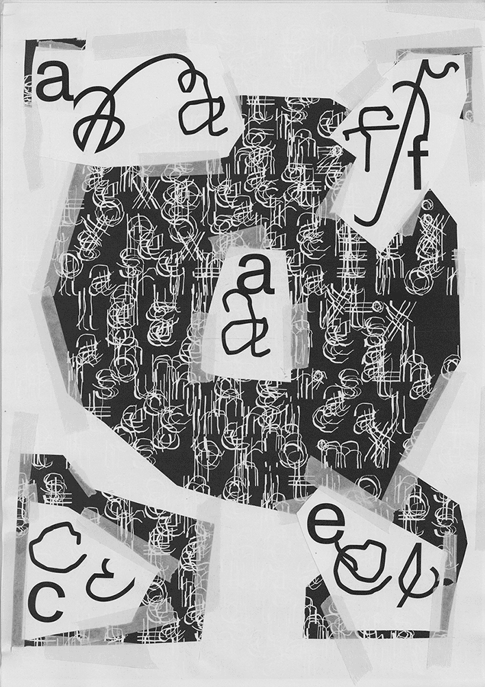
Creative coding allows a different kind of return. The scripts I write can be shared, modified, used by others. The code does not require my presence to function. It executes according to rules I established, but in contexts I cannot predict. This is return as gift: the work released from the maker’s control, allowed to live in the world, to generate new forms, to seed possibilities I did not foresee.
The web-based graduation project is return made literal. It takes the research—all the marking, scanning, coding, writing, theorizing—and makes it navigable. The viewer enters a space constructed from materials gathered during the journey. They do not experience what I experienced, but they experience something: the density, the rhythm, the resistance, the delay. The imaginal becomes partially present, partially graspable, partially inhabitable.
This is not full return—the imaginal never fully crosses into the ordinary. But it is sufficient return. It creates conditions where others can sense that something lies beyond the visible, where attention can be redirected toward what usually remains imperceptible, where the assumption that reality is exhausted by the apparent can be questioned.
Federico Campagna speaks of apocatastasis—restoration, the return of all things to their origin. But in Campagna’s use, apocatastasis is not nostalgia. It is not return to an original state but return transformed by the journey. What comes back is not what left. The world that receives the return is not the world that sent the seeker forth. Both have changed. The journey alters not only the traveler but the ground to which they return.
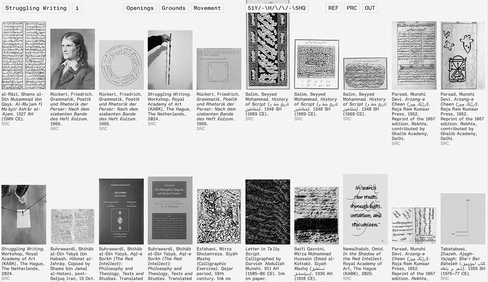
My practice enacts this. The materials I began with—letters, scripts, typographic systems—have not been left behind but transformed. They return bearing the marks of their journey through opacity, through density, through dissolution. They are still letters, still scripts, still systems. But they function differently now. They carry memory of elsewhere.
The bilingual and biscriptual work carries this return structurally. Farsi and Latin emerge from different histories, different geographies, different orders of visual organization. Yet in my work they meet, coexist, leave traces on each other without merging. This is return as coexistence: the recognition that multiple worlds can occupy the same surface, that difference need not resolve into unity, that what returns does not have to conform to what remained.
Archives function as sites of return as well. The materials I gather—scanned pages, photographed marks, documented processes—form an archive that holds the journey without claiming to exhaust it. The archive is not complete. It is not authoritative. But it is present. It offers evidence that the journey occurred, that forms were encountered, that transformation happened.
Siyahmashq models this return as well. The blackened page is brought out of the calligrapher’s studio, mounted, preserved, transmitted across centuries. It re-enters circulation not as functional writing but as something else: testament to endurance, evidence of devotion, proof that writing can persist beyond its communicative function. The page returns not to serve but to witness.
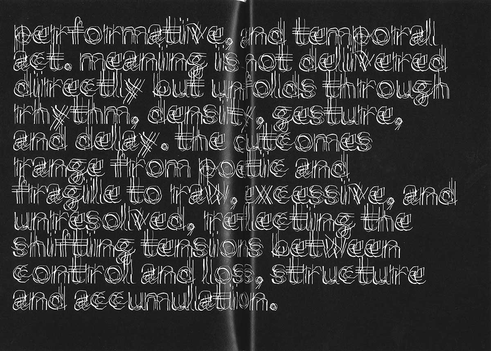
Practice-led research, as articulated in Becoming Research, is fundamentally about return. The practice generates insights that research then carries into discourse, into conversation with other researchers, into the structures of knowledge production. But the practice does not disappear into that discourse. It remains as remainder—as what cannot be fully captured, as excess that resists being reduced to proposition.
This is why the visual materials matter as much as the written text. The scanned pages, the documented marks, the screen captures of code—these are not illustrations. They are parts of the return that cannot be translated into words. They insist on their own presence, on being encountered as form. They remind the reader that something persists beyond what can be said.
The return, then, is not closure. It is opening: the recognition that the journey continues, that what was found needs to be worked with, lived with, allowed to shape ongoing practice. The imaginal does not stay in the imaginal. It seeps into the ordinary, makes the ordinary strange, reveals that the ordinary was never as stable as it seemed.
What I bring back is not a solution but a question. Not an answer to the problem of illegible writing, but a way of staying with illegibility as condition. Not a new system that replaces the old, but a method for working within systems while remaining alert to their limits, their failures, their capacities to be otherwise.
The return is recursive. The research feeds the practice, which feeds the research, which generates the graduation project, which feeds new practice. There is no final arrival. The journey continues because the imaginal is not a destination but a dimension—always available, always adjacent, always calling for return even as one returns from it.
The page is carried forward. The mark is documented. The code is shared. The text is written. And through these acts of return, the imaginal becomes partially present—not fully, never fully, but enough. Enough to remind that reality is not exhausted. Enough to suggest that other worlds are possible. Enough to keep the struggle alive.
The traveler returns. Changed, carrying what can be carried, leaving behind what cannot cross. The world receives them. The work continues.
In Suhrawardi’s allegorical narrative The Red Intellect, the seeker’s journey through darkness does not end with arrival at a destination. Instead, the seeker encounters a guide—the Red Intellect itself—who is neither human nor angel but something intermediate. The guide does not provide answers. It provides presence, orientation, the capacity to continue. The Red Intellect is not the endpoint but the companion, the intelligence that emerges from the journey itself and makes further journeying possible.
This is the nature of outcome in research that refuses closure. The result is not a finished object but an activated capacity. Not knowledge that can be possessed but orientation that allows navigation. Not mastery achieved but method clarified. The Red Intellect is what remains when the journey has stripped away everything inessential—not purity, but essence. Not arrival, but momentum that can sustain itself.
For this research, the Red Intellect is the practice itself, now clarified through having been enacted. Typography as inquiry. Writing that has learned how to struggle productively, how to remain in conditions of resistance without demanding resolution, how to generate form from friction.
The graduation project embodies this clarified practice. It is not the conclusion of the research but its activation—the point where everything that has been explored through making, reading, coding, scanning, drawing, and writing becomes navigable by others. The web-based environment does not present the research as finished document but as living archive, as field of possibilities, as space where struggling writing can be encountered directly.
In this environment, the viewer does not follow a predetermined path but constructs their own trajectory. Text fragments appear and disappear based on interaction. Images accumulate or dissolve depending on how the viewer moves. Code executes in response to input, generating forms that exist only in that moment of encounter. The work is not fixed—it is generative, responsive, temporal.
This is world-making in Campagna’s sense: the creation of a small cosmos with its own laws, its own rhythms, its own modes of disclosure. The viewer who enters this world must learn its logic, must adjust their expectations, must allow themselves to be oriented by its structures. The Red Intellect here is the interface itself—not transparent tool but active guide, showing what can be seen while hiding what must remain hidden, allowing some paths while blocking others, orienting without dictating.
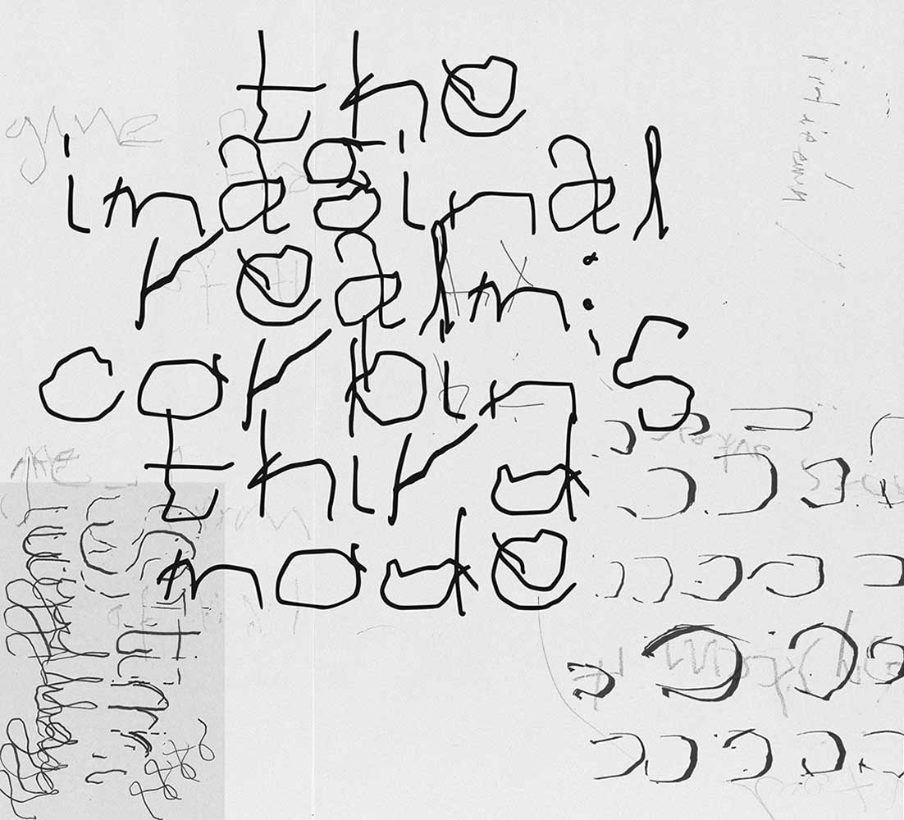
The typefaces function as part of this world’s substance. They are not fonts to be applied to content but material conditions that shape what can appear. A letter that trembles creates different possibilities than a letter that stands firm. A script that accumulates density generates different rhythms than a script that maintains separation. The typefaces carry the memory of their making—the hand’s hesitation, the pressure’s variation, the repetition’s erosion—and that memory shapes how they function.
Creative coding provides the dynamic dimension. Scripts run continuously, generating new configurations, new densities, new relations between elements. The code does not produce static images but fields of possibility, states that shift subtly with each iteration. The viewer sees not a frozen moment but a process, not an object but an event. Time re-enters the visual field as the ongoing operation of systems that never fully settle.
The bilingual and biscriptual dimension remains structurally present. Farsi and Latin coexist throughout the environment, sometimes readable, sometimes visual pattern, sometimes both. The oscillation between semantic and formal perception becomes part of the navigation itself. The viewer cannot master both registers simultaneously—they must move between them, accepting that complete comprehension is not available, that partial knowing is the condition of encounter.
Documentation—the scanned pages, the photographed marks, the captured screens—functions as testimony. These are traces of the journey, evidence that forms were made, that processes were enacted, that transformation occurred. They do not explain the work but witness to it. They say: this happened. Forms appeared. Attention was sustained. Time accumulated into density.
Siyahmashq remains as methodological anchor. Its logic—accumulation producing opacity, discipline generating excess, persistence exceeding function—structures the entire project. The page that grows black through repetition becomes model for how the graduation work operates: through intensification of presence, through insistence of form.
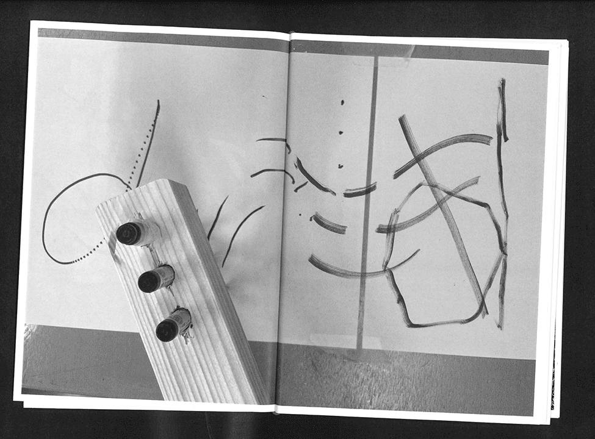
The method that has emerged values constraint as enabling, repetition as transformation, opacity as knowledge, multiplicity as coexistence, presence over representation, process over product. This method is not mine alone. It draws from traditions that long precede this research: calligraphic practices that value endurance over expression, mystical traditions that understand darkness as vision, critical theory that refuses mastery, speculative philosophy that proposes world-making, practice-led research that thinks through making.
What this research contributes is demonstration: proof that typography can operate at this register, that design can be cosmological practice, that writing can struggle without failing, that the imaginal realm can be constructed through deliberate, disciplined, materially grounded work.
The project will open to others: a URL, an interface, an environment that can be entered from any device with a browser. This mundane technical fact does not diminish the work’s reach into the imaginal. The digital is another mode of presence, another way forms can manifest, another threshold where encounter becomes possible.
Viewers will navigate according to their own curiosities, their own rhythms, their own tolerances for difficulty. Some will skim and leave quickly. Others will linger, return, explore deeply. The work makes no demands. It offers itself: dense, resistant, unresolved, alive.
The essay will end and the documentation will be archived but the practice continues. The Red Intellect is activated. The typefaces will be used in ways I do not anticipate. The code will be modified, extended, forked. The methods will be applied to materials I have not considered. The questions will generate further questions. Outcome as beginning: the continuation of inquiry under new conditions. The research has generated tools—conceptual, technical, material—that make further work possible. The final work is activated field, opening.
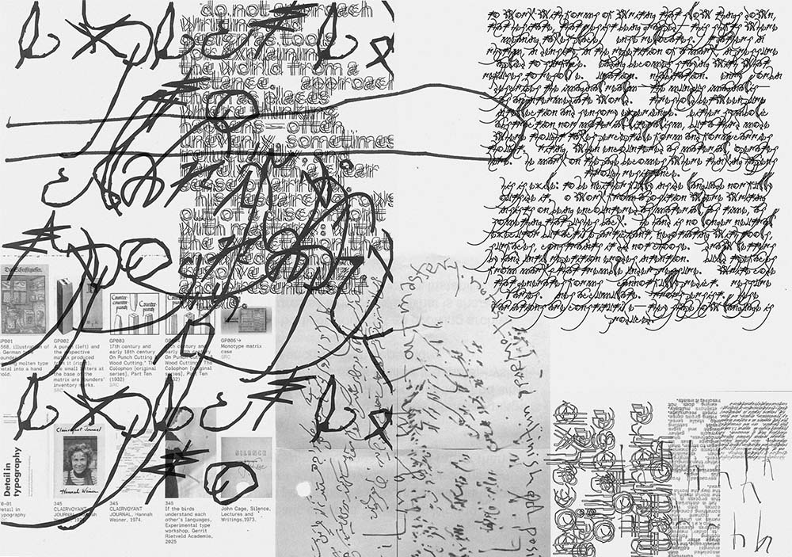
What Suhrawardi understood, what Corbin elaborated, what Campagna insists upon, what this research enacts: the journey through the imaginal does not end. The Red Intellect is companion. It walks beside you, showing what can be seen, reminding you that other modes of vision exist, orienting you toward what remains when systems fail and certainty dissolves.
The practice continues. The marks accumulate. The code executes. The page grows dense. And in that density, that persistence, that refusal to resolve into clarity, something remains absolutely present.
The Red Intellect speaks: Continue.
And the hand marks the page.
Adorno, Theodor W. “The Essay as Form.” Translated by Bob Hullot-Kentor and Frederic Will. New German Critique, no. 32 (Spring–Summer 1984): 151–171.
Campagna, Federico. Prophetic Culture: Recreation for Adolescents. London: Bloomsbury Academic, 2021.
Corbin, Henry. Alone with the Alone: Creative Imagination in the Sufism of Ibn ‘Arabi. Translated by Ralph Manheim. Princeton: Princeton University Press, 1997.
Corbin, Henry. Man of Light in Iranian Sufism. Translated by Nancy Pearson. New Lebanon, NY: Omega Publications, 1994.
Suhrawardī, Shihāb al-Dīn Yaḥyā. Aql-e Sorkh (The Red Intellect): Philosophy and Theology, Texts and Studies. Translated and edited by Reza Kouhkan, 1 Jan. 2011.
Cheetham, Tom. The World Turned Inside Out: Henry Corbin and Iranian Mysticism. 2003.
Dotremont, Christian. Envie de ne plus écrire. 1975. Visual poem / logogram.
Imagining Language: An Anthology. Edited by Jed Rasula and Steve McCaffery. Cambridge, MA: MIT Press, 1998.
Rogoff, Irit. “Becoming Research.” Lecture/essay, 2017.
“Tom Cheetham on Henry Corbin and James Hillman.” Overmorrow’s Library, season 1, episode 11, 28 Jan. 2021, overmorrows-library.simplecast.com/episodes/tom-cheetham-on-henry-corbin-and-james-hillman.
Esfahani, Mirza Gholamreza. Siyāh Mashq (Calligraphic Exercise). Qajar period, 19th century. Ink on paper. Iran.
Letter in Taʿlīq Script. Calligraphed by Darvish ʿAbdullah Munshi. 911 AH (1505–06 CE). Ink on paper. Metropolitan Museum of Art, New York.
Seifi Qazvini, Mirza Mohammad Hussein (Emad al-Kottab). Siyah Mashq (نستعلیق سیاهمشق). 1336 AH (1918 CE). Calligraphy Museum of Iran.
Royal Academy of Art, The Hague
KABK
Graphic Design
2026
Design & Text: Omid Nemalhabib
Thesis/Research Supervisor: Dirk Vis
Coding tutors: Thomas Buxo, François Girard-Meunier
Website text is typeset in Times New Roman for body text. Typefaces made and used as part of the research and some of the visuals: Asemic Sharp, Asemic I, Asemic I Italic, Asemic II, Asemic III, SW01.
I am deeply grateful to Dirk Vis for his rigorous and generous feedback, giving me the freedom to explore, and for introducing me to Federico Campagna’s work, which opened a critical door where philosophy and artistic practice could converge and fundamentally shape this project. Bart de Baets for his incredible book collections and motivating conversations. Thomas Buxó and Simnikiwe Buhlungu offered kindness, openness, and flexible support throughout.
The initial spark for this project, as a larger grounding research, emerged during Richard Niessen’s course. Those talks marked a significant shift toward a more critical and experimental approach that continues to inform the work. The teachers at letterStudio provided foundational knowledge that has remained present throughout this project’s development.
Thank you, all peers, for sharing thoughts in the process of making the research documents, for their feedback, contribution, and proofreading. Thank you to all students and practitioners at Royal Academy of Art, The Hague (KABK), Gerrit Rietveld Academie, Grafisch Lyceum Rotterdam, Nieuwe Instituut, and NAi Booksellers (Graphic Design Fair 2025) who participated in struggling writing workshops and experimental Perso-Arabic sessions, providing vital engagement as the work developed.
Mahsa has been a constant source of love, patience, strength, and support throughout these years, a significant part of my life and existence. The richness of what we have shared is woven into this work. Britt Möricke, though not directly involved in this research, has been an enduring influence through her writing on type and typography. Her generous sharing of insight and resources provided essential energy for deeper exploration.
Finally, I acknowledge my friends, collaborators, and publishers in Tehran. At this exact moment of completing this phase, internet access has been shut down by the government. They are living under brutal suppression from inside and devastating war from outside. The inability to share this moment with them marks a profound absence. The work nevertheless carries traces of what was built together.
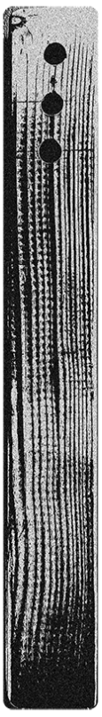
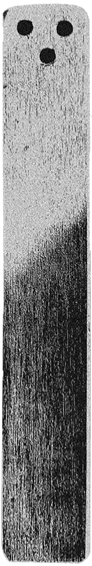
Figure 1 — Struggling Writing Process and Prototyping. Research documentation, 2026. Unlearning writing through learning a new way of writing. This handmade double pen holder was part of the tool-making process during early prototyping and experimentation. The method became central to the visual and conceptual research: a tool with no fixed rules, using limitation as generative constraint. When there is no stable position to write from, the brain struggles with the hand. The tool itself creates the condition of struggle.
Figure 2 — Struggling Writing Process and Prototyping. Research documentation, 2026. Simple analogue wooden tool with three holes functioning as pen holder. Used to create repetitive structures while testing pressure, density, and stroke variation. The struggle to make clarity becomes strange, destroyed—bringing the experiment to the surface.
Figure 3 — Sketching with tools, combining new letterforms through overwriting and observation.
Figure 4 — Sketching, rewriting, and overwriting the title "Struggling Writing" as part of process books made for documentation.
Figure 5 — Corbin, Henry. Alone with the Alone: Creative Imagination in the Sufism of Ibn ʿArabi. Preface by Harold Bloom, Princeton University Press, 1997. Henry Corbin, Alone with the Alone: Creative Imagination in the Sufism of Ibn ʿArabi. Corbin's concept of the mundus imaginalis—the imaginal realm as intermediate space between intellection and sensation—provides the cosmological framework for this research, where writing becomes presence rather than representation.
Figure 6 — Free writing from sketchbook used as diary and poetry. Making visual poetry by repeating texts from sounds and voices I hear, creating freely systematic rhythms like visual poetry in connection to Siyahmashq practice.
Figure 7 — Scanning, printing, re-scanning, and reprinting—using iteration as everyday practice to unlearn and learn the deeper levels of writing for the sake of writing, visually documenting text as system.
Figure 8 — Using Processing to make generative typography, working with sketches, strokes, and collages around the idea of writing and generative form.
Figure 9 — More Processing experimentation—exploring and understanding accumulation of text through playful conversation between digital and analogue tools.
Figure 10 — Esfahani, Mirza Gholamreza. Siyāh Mashq (Calligraphic Exercise). Qajar period, 19th century. Ink on paper. Iran.
Figure 11 — Making my own Siyahmashq using analogue tools in daily practice.
Figure 12 — Double-page spread from a process book made during experimentation and prototyping. Establishing methods and creating variety of iterations—through workshops asking others to draw and drawing myself—observing how overlaps, repetitions, and new structures shape letters. Connected and intertwined with type design patterning but in a different approach: more complex, illegible.
Figure 13 — Using analogue and digital tools, scanning and rewriting as part of the typeface-making process. Creating different layouts and compositions out of struggling writing.
Figure 14 — Seifi Qazvini, Mirza Mohammad Hussein (Emad al-Kottab). Siyah Mashq (نستعلیق سیاهمشق). 1336 AH (1918 CE). Calligraphy Museum of Iran
Figure 15 — Letter in Taʿlīq Script. Calligraphed by Darvish ʿAbdullah Munshi. 911 AH (1505–06 CE). Ink on paper. Metropolitan Museum of Art, New York.
Figure 16 — Dotremont, Christian. Ou vas-tu, Lapon. 1970.
Figure 17 — Early typefaces in use from the struggling writing process. Experimentation with italic version of one typeface—closer to the idea of accumulation, repetition, and pattern. Also closer to asemic writing, which makes sense in this project in terms of illegibility and visual language.
Figure 18 — Collection of typefaces in use: different weights, forms, layouts, compositions. Making posters as documentation, printing in small and large sizes, scanning and reprinting to see how contrast and complexity of types work together and how iteration and accumulation can generate new methods.
Figure 19 — Joyce, James. Finnegans Wake manuscript draft. ca. 1923–1939. National Library of Ireland.
Figure 20 — Practicing and sketching with an analogue long metal pen holder, writing with both hands. Exercising letters, shapes, repetition—documented as part of the process book.
Figure 21 — Double-page spread from a process book documenting the whole project—the making and developing part.
Figure 22 — Type in use, making large posters representing pattern, system, and the typeface made through drawing. Testing how more familiar compositions can shape fresh complexity and generate more based on the same method and structure. Addressing Siyahmashq's system of opacity and density.
Figure 23 — Writing and notation on printed pages of Adorno's "The Essay as Form." Reading, digesting, understanding the essay and reflecting through the same practice and method. This was part of the writing and research—including all drafts, notes, ideas, conversations, findings as documentation. The form of the project and the form of the research make the essay, and the essay is always in relation to struggling writing process—recursive.
Figure 24 — Preview of text in Visual Studio Code as part of making this website. Showing how the repetitive method and style of writing relates to the concept of struggling writing, and how the act of repetitive scrolling becomes part of observation—watching the essay, not only reading it. Making a situation and condition through the act of accumulation.
Figure 25 — Struggling Writing Process and Prototyping. Research documentation, 2026. Using analogue tools, repeating text in Farsi and English, capturing them, putting them together, studying their unexpected and irregular forms as part of the type design process.
Figure 26 — Federico Campagna, Prophetic Culture: Recreation for Adolescents. Campagna's framework of world-making and the adolescent condition—suspended between dying and emerging worlds—provides the prophetic dimension of this research, where typography becomes cosmological practice.
Figure 27 — Jāmī, Nūr al-Dīn ʿAbd al-Raḥmān. The Miʿrāj of the Prophet. Double folio from Haft Awrang (Seven Thrones), 15th century. National Museum of Asian Art, Smithsonian Institution, Washington, DC. Persian illuminated manuscript showing the visionary journey through realms—a visual precedent for understanding writing as travel through imaginal space.
Figure 28 — Corbin, Henry. Alone with the Alone: Creative Imagination in the Sufism of Ibn ʿArabi. Princeton University Press, 1997. Henry Corbin, Alone with the Alone: Creative Imagination in the Sufism of Ibn ʿArabi. The imaginal realm (mundus imaginalis) as real intermediate space—neither symbolic nor literal—where forms have presence without physical materiality. This concept grounds the research's approach to writing as cosmological practice.
Figure 29 — Struggling Writing Process and Prototyping. Research documentation, 2026. Using tools, studying repetition and accumulation. Writing part of the original essay text and making it iterative.
Figure 30 — Part of the personal Struggling Writing archive of experimentations, texts, references, image sources, and experiments. Online archive to follow and track the path, sharing with others throughout the process.
Figure 31 — Situationist International. “Critique of the Political Practice of Détournement.” Stedelijk Museum Amsterdam, 2019.
Figure 32 — Typeface in use, iteration, pattern-based composition to make Siyahmashq-like visuals with dense typography.
Figure 33 — Using the Asemic typeface—very first rough sketch and draft. The type came to life from random drawings and sketches. During development I made 3 versions with variety of shapes to create more material for use through digital and analogue tools.
Figure 34 — The Text of Revelation (Papyrus 24/P24). Early 4th century. Greek manuscript fragment.
Figure 35 — Suhrawardī, Shihāb al-Dīn Yaḥyā ibn Habash. Hikmat al-Ishrāq. Copied by Shams bin Jamal al-Hatani, post-Seljuq Iran, 13 Oct. 1220. Manuscript.
Figure 36 — SW01 in use—one of the outcome and developed typefaces. Making booklets, posters, using the essay text, creating statements as part of the spirit of the project.
Figure 37 — Poster made using different typefaces, drawings, collages, scanning, and printing from types emerging from this project. Created for KABK student initiative weekly poster series "Something to... Think About."
Figure 38 — Screenshot of part of the ongoing archival material, updating during the process, workshops, presentations, and making. https://strugglingwriting.omidnemalhabib.com/
Figure 39 — Double-page spread from one of the process books using mixed typefaces as part of the typographic-visual essay.
Figure 40 — Crop of typographic-visual essay—testing, writing, repetitions.
Figure 41 — Double-page spread from a process book made during experimentation and prototyping. Establishing methods and creating variety of iterations—through workshops asking others to draw and drawing myself—observing how overlaps, repetitions, and new structures shape letters.
Figure 42 — Part of the typographic-visual essay—testing, writing, repetitions.
Struggling Writing — Growing Archive. An ongoing online collection of process documentation, experiments, references, and workshop material that forms the grounding research behind this project. Open archive ↗
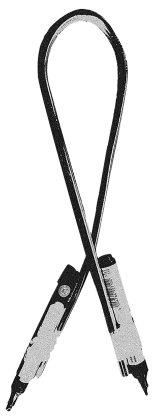
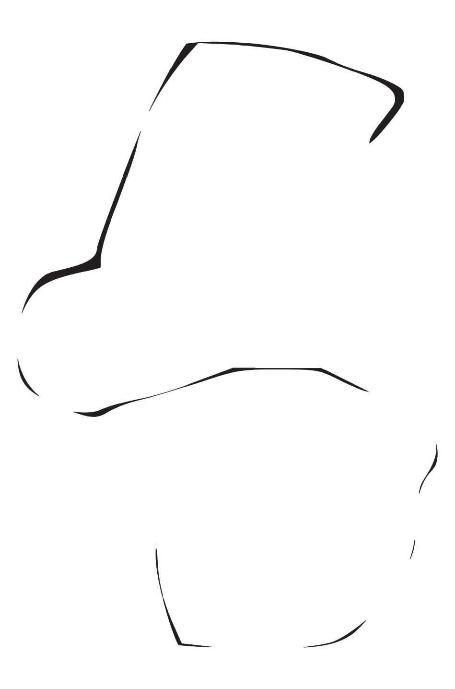
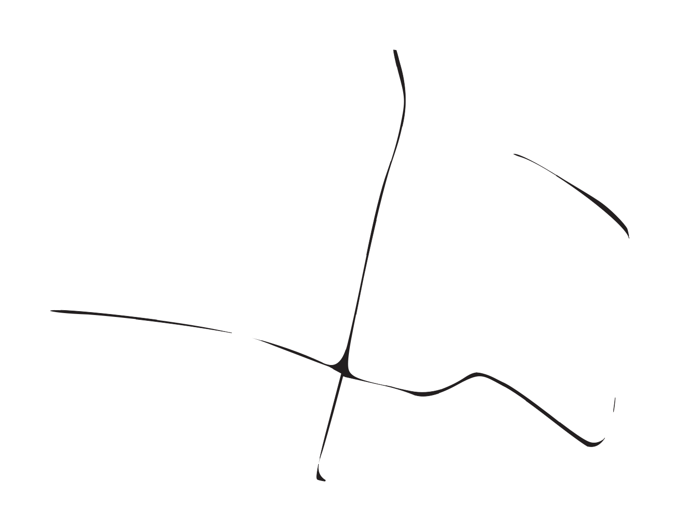
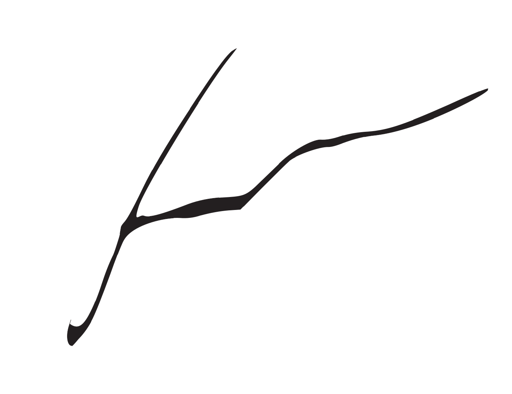
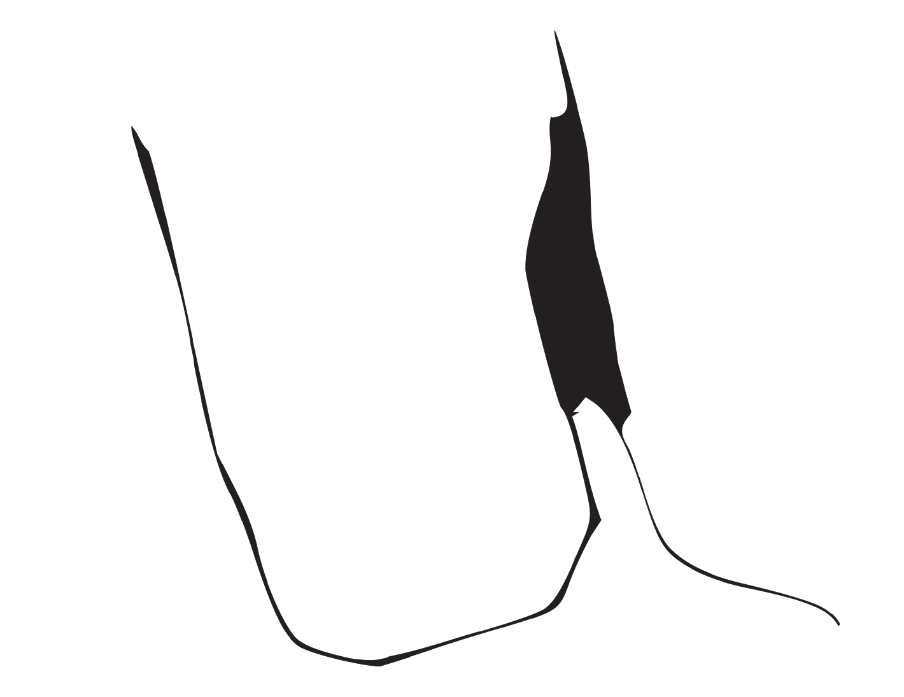
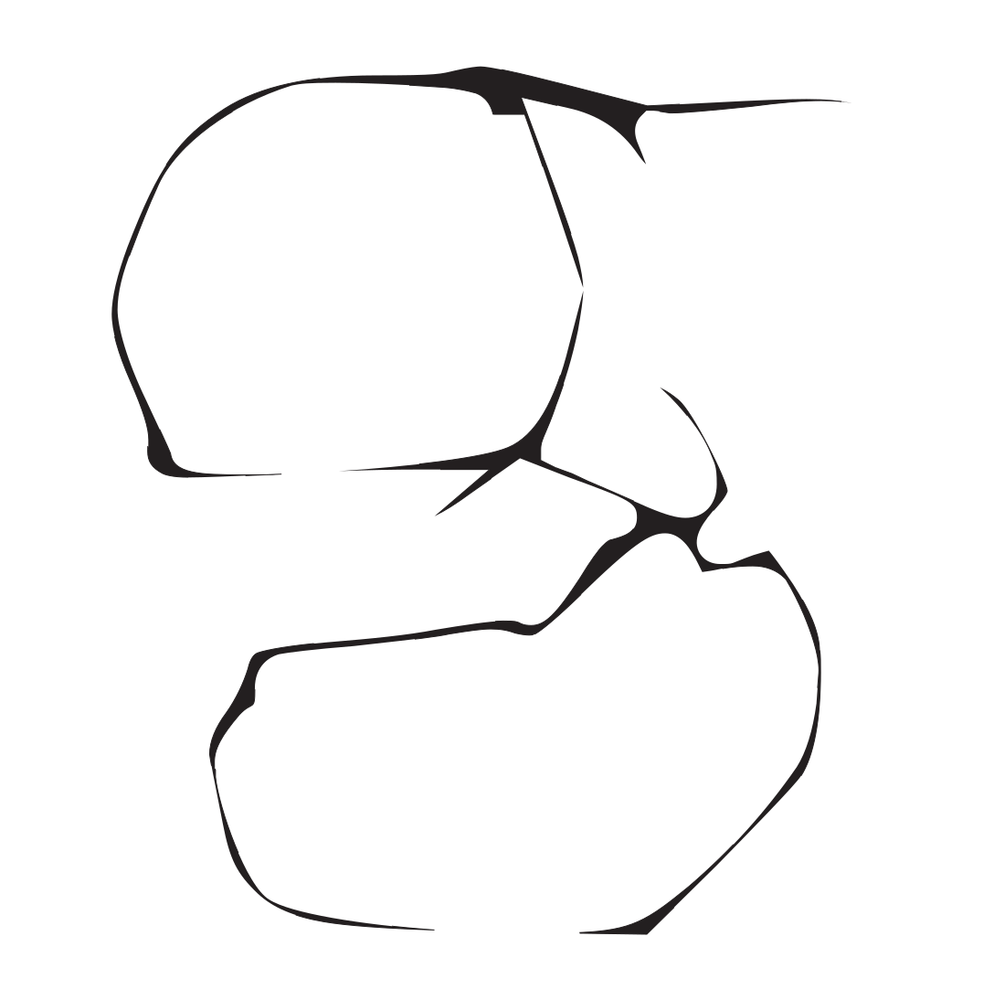